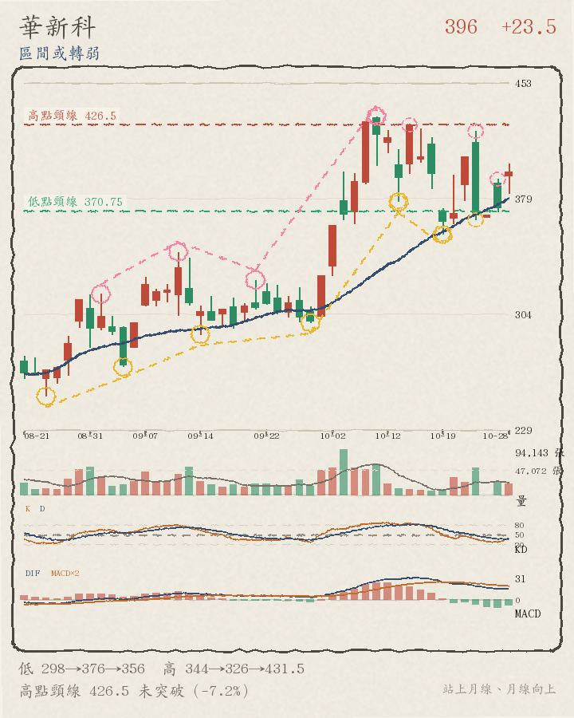
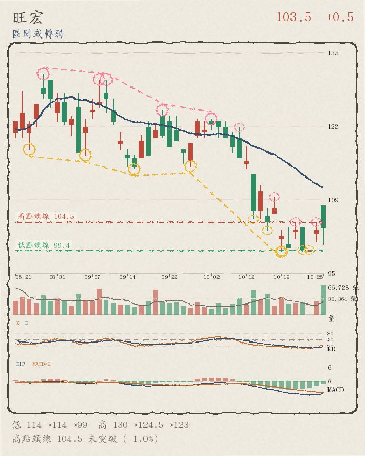
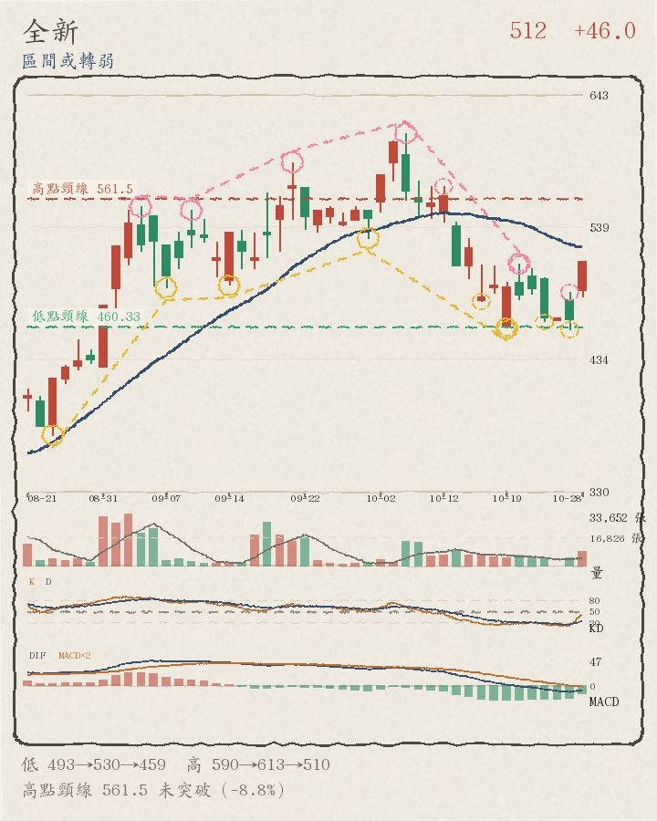
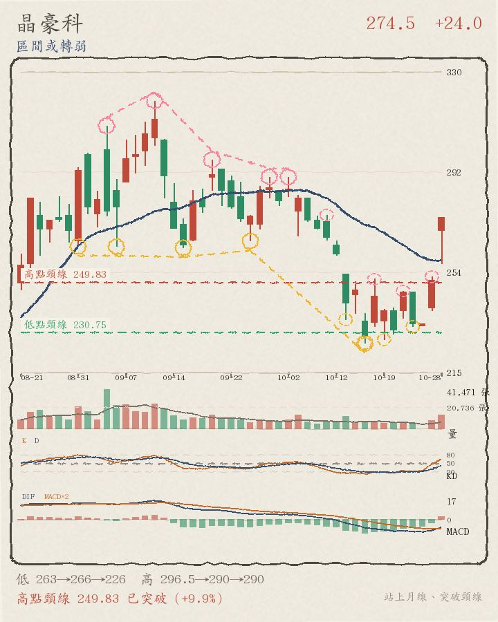
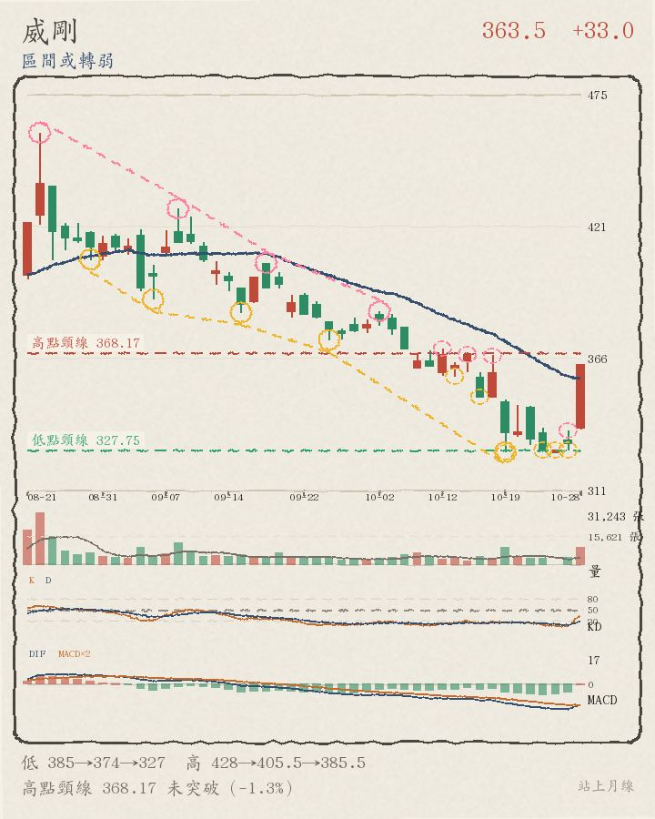
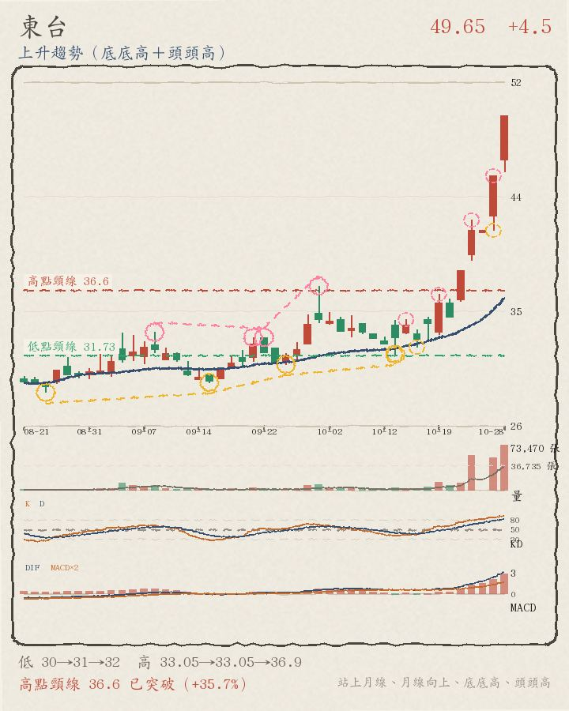
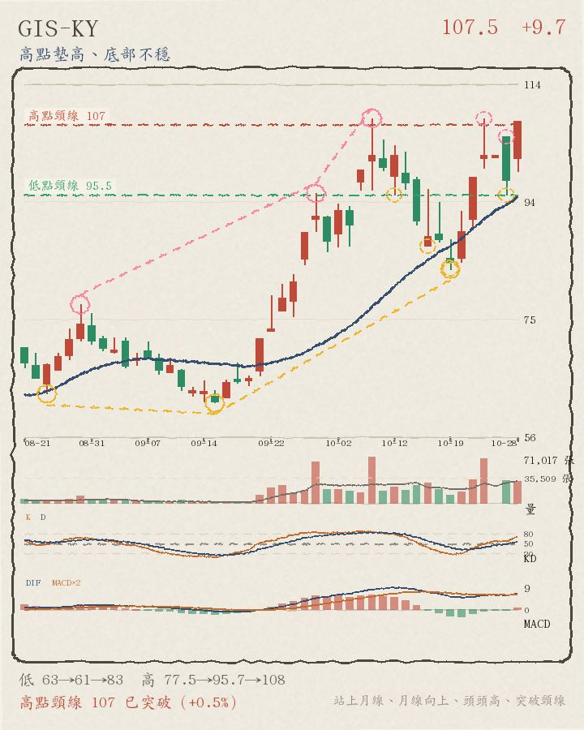
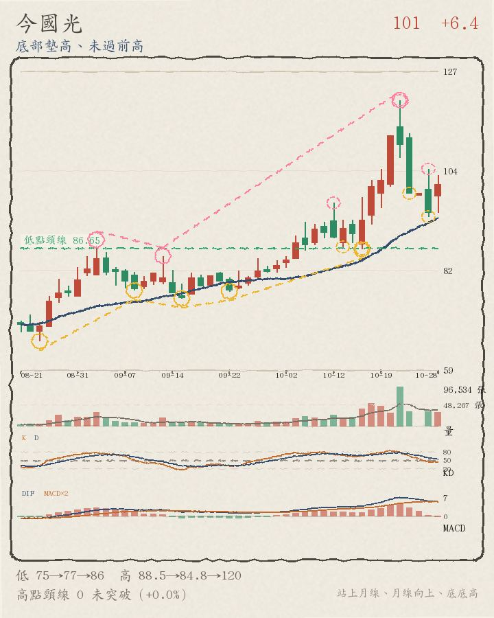
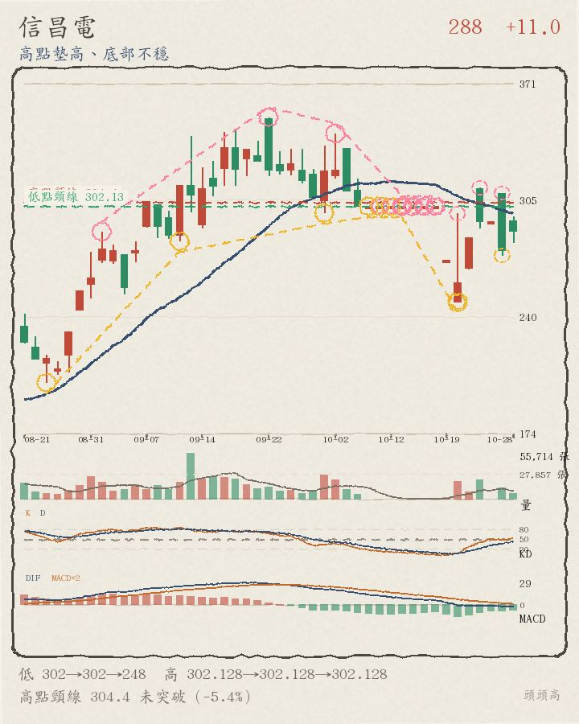
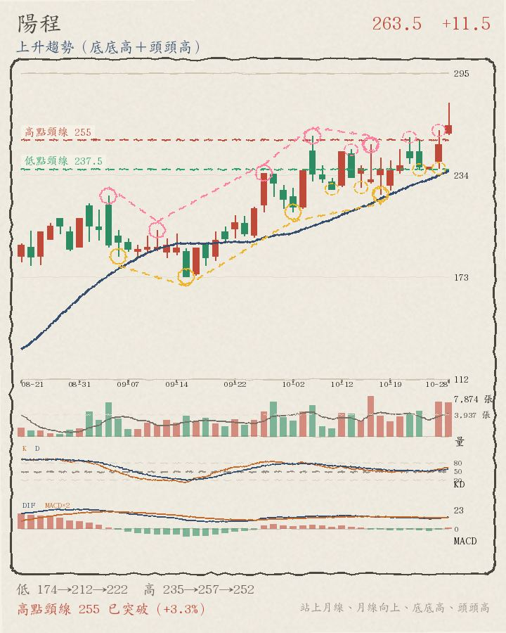

← 回股市觀察
盤中觀察 每日盤中觀察
2026/10/28 12:31 即時快照 · 當日盤中成交金額前 50 檔（上市 35＋上櫃 15）· 公開資料整理
46,851.43
加權指數 +755.20 點（+1.64%）
這是盤中快照，不是收盤結果。資料時間 2026-10-28 12:31:19（TWSE MIS 即時行情，上市／上櫃皆 delay=0）。
13:30 收盤（含最後一盤集合競價）會再變動；量能是以「已過交易時間比例」推估（尾盤大量時會低估）；
技術面標籤是把盤中現價代入原本以收盤價設計的規則（日線歷史只到前一交易日 9/14）。
統計範圍：候選池＝20261027 與 20261022 收盤成交值前段（上市 250／上櫃 130）取聯集，共 434 檔；再以今日盤中累計成交金額排序取
上市前 35＋上櫃前 15。漲跌家數是候選池內的數字，不是全市場（即時全市場家數證交所沒有開放端點）。
本頁為公開資料的整理與觀察，不構成投資建議，不報牌、不預測、不下買賣決策。
時程紀錄（本日盤中分析）▾ 點擊展開▴ 點擊收合
| 階段 | 時間 |
|---|
| 任務開始 | 由排程自動觸發（週一～週五 12:30） |
| 分析腳本執行 | 12:30:24 → 12:31:19（55.0 秒） |
| 資料快照時間 | 2026-10-28 12:31:19（行情時間戳 12:31:06） |
| 本頁產出 | 見頁尾版本時間 |
逐階段 log：
| 12:30:24 | START 盤中分析開始 |
| 12:30:24 | ① 抓即時指數（tse_t00 / otc_o00） |
| 12:30:25 | ② 建立候選池（20261027 與 20261022 成交值前段，上市＋上櫃） |
| 12:30:25 | 候選池共 434 檔 |
| 12:30:25 | ③ 抓即時候選池行情 |
| 12:31:19 | 取得即時報價 434 檔 |
| 12:31:19 | 候選池漲跌：漲 337／跌 88／平盤 9（快照時間 12:31:06） |
| 12:31:19 | ④ 選出 70 檔（上市 50＋上櫃 20），門檻 14.96 億 |
| 12:31:19 | ⑤ 抓日線歷史並算技術面 |
| 12:31:19 | ⑥ 產出（70 檔） |
K 線圖怎麼看：每一檔都附 K 線圖 —— 黃圈是轉折低點、粉圈是轉折高點（
虛線圈代表還沒確認的轉折）、藍線是月線（20 日均線）；頸線取最近兩個轉折低點之間的最高轉折高點，
突破頸線才會標示。
圖上另有兩條水平虛線、左側標數值：高點頸線（紅，最近兩個轉折低點之間的最高轉折高點）與低點頸線（綠，最近兩個轉折高點之間的最低轉折低點）；樣本不足就不畫。
紅色 K 棒＝收盤高於開盤、綠色＝收盤低於開盤。
大盤趨勢快篩（加權指數）（盤中近似） 資料日 2026/10/27・來源：證交所公開資料
主狀態：跌破月線
前一交易日對照（10/22）：區間整理／均線糾結（量比 20 0.96） → 今日跌破月線（量比 20 1.06）
指標、數值、判定（點開看 12 項明細：均線位置／排列、月線方向、頸線、轉折結構、位階、量價…）
加權指數今天漲 54.80 點（+0.12%），收 46,096.23、跌破月線 47,986.41；月線還在下彎，MA5 這條短均還沒收復，離高點頸線 49,285.22 還差 6.47%。
- 均線位置：4 條均線站上 0 條；沒站上的是 MA5 46,428.09（收盤比它低 0.71%）、MA10 47,249.07（收盤比它低 2.44%）、MA20 47,986.41（收盤比它低 3.94%）、MA60 46,281.97（收盤比它低 0.40%）
- 月線方向：月線 MA20 現在 47,986.41，比 5 個交易日前低 134.81 點 → 下彎
- 量能：集中市場成交 10,316.8 億，比 5 日均量大一些（1.14 倍）、比 20 日均量大一些（1.06 倍）
- 關鍵價位：高點頸線 49,285.22，還差 6.47%；低點頸線 44,639.15，還在下方 3.26%
- 大小型股：加權 +0.12%、櫃買 -0.65%，方向相反（大型股與小型股不同調）

圖說：加權指數日 K（與個股圖相同標記）：黃圈＝轉折低點、粉圈＝轉折高點、虛線小圈＝還沒確認的轉折、藍線＝月線 MA20、水平虛線＝高點／低點頸線。最後一根是資料日當天。
本區塊為公開資料的技術面觀察，不構成投資建議，
不報牌、不預測、不下買賣決策。成交金額為集中市場總成交金額（含 ETF／權證），
與頁首摘要的「上市個股成交金額」口徑不同。標籤是統計，不是評分、也不是推薦。
上市 vs 上櫃（同期快篩）
加權 +0.12% vs 櫃買 -0.65%（方向相反，大小型股背離） → 方向相反（大小型股背離）
（兩個市場分開寫，不合併成一個數字；櫃買為 TPEX 公開資料）
櫃買歷史：TPEX 逐日回補 130 根；來源：櫃買中心 www/zh-tw/indexInfo/sectinx（逐日，官方；OpenAPI tpex_index 只回當月）
（TPEX OpenAPI 只回當月，故逐日回補；歷史不足就不算該條均線並標「資料不足」，不用錯數字）
近 20 個交易日大盤狀態回溯（最新在上）（點開看逐日主狀態／量比／量價象限）
用同一支程式回算最近 20 個交易日（主狀態 S1~S8 與量比 20 皆為當日收盤當時的判定，
不是事後調整）；量比 20 未公布的日子寫「—」。
好條件最多的（前 10）
不好條件最多的（前 10）
好條件（7 項）：站上月線、月線向上、底底高、頭頭高、突破頸線、攻擊量（量增＋上漲）、守住今日高檔（距今日高點 1% 內）。
不好條件（7 項）：跌破前低、今日下跌、相對大盤弱、在月線之下、貼近今日低點（1% 內）、跌破昨日低點、月線下彎。
兩邊都是同一組日線資料＋盤中即時價算出來的「符合項目數」，只是把方向相反的條件分開數；
條件數不是評分或推薦，不構成投資建議。
盤中爆量（估量比 ≥ 1.5）（16 上市 10／上櫃 6）
跌破前低（線型轉弱）（15 上市 10／上櫃 5）
今日疲弱（跌幅前 10）（10 上市 8／上櫃 2）
逐檔（70 檔，依盤中成交金額排序）
台積電 2330 上市
2415 +15.0（+0.63%）
區間或轉弱 盤中成交值 313.95 億・全榜第 1 名（上市第 1 名）・相對大盤 -1.01
好條件 1/7：守住今日高檔（距今日高點 1% 內）
不好條件 4/7：相對大盤弱、在月線之下、貼近今日低點（1% 內）、月線下彎

12:31 盤中 2415（+0.63%），比加權指數弱 1.01 個百分點、跌破月線 2476.5，離高點頸線 2425 還差 0.4%，轉折還沒走出明顯方向。
- 月線位置：現價 2415 在月線 2476.5 之下（-2.5%）；5 日線 2399 也在月線之下（短均在下）；月線向下
- 量能：以已過交易時間推估，今天成交量約是 20 日均量的 0.71 倍（量平），比 20 日均量少很多；上漲但量縮，量價背離
- 關鍵價位：高點頸線 2425 還沒突破，差 0.4%；前一交易日高點 2405（高於 0.4%）；今天盤中高點 2430（低於 0.6%）；今天盤中低點 2410（高於 0.2%）
- 轉折結構：低點 2350、2375、2375 與高點 2505、2510、2590 都沒有明顯遞增，屬於區間震盪或轉弱；還沒確認的轉折低點 10-22 2385、10-27 2380；還沒確認的轉折高點 10-22 2435、10-27 2405（圖上虛線小圈）
量平
↑ 回上方清單
聯發科 2454 上市
4235 +275.0（+6.94%）
底部墊高、未過前高 盤中成交值 229.03 億・全榜第 2 名（上市第 2 名）・相對大盤 +5.30
好條件 1/7：底底高
不好條件 3/7：跌破前低、在月線之下、月線下彎

12:31 盤中 4235（+6.94%），比加權指數強 5.30 個百分點、跌破月線 4558.5，離高點頸線 4332.5 還差 2.3%，底部還在墊高（但高點沒同步創高）。
- 月線位置：現價 4235 在月線 4558.5 之下（-7.1%）；5 日線 4054 也在月線之下（短均在下）；月線向下
- 量能：以已過交易時間推估，今天成交量約是 20 日均量的 0.98 倍（量平），跟 20 日均量差不多
- 關鍵價位：已跌破前一個轉折低點；高點頸線 4332.5 還在現價上方 2.3%；前一交易日高點 4075（高於 3.9%）；今天盤中高點 4235（高於 0.0%）；今天盤中低點 4040（高於 4.8%）
- 轉折結構：低點 3655、4430、4875 墊高（底底高），但高點 4855、5480、5165 沒有同步創高；還沒確認的轉折低點 10-22 4005、10-27 3910；還沒確認的轉折高點 10-20 4305、10-27 4075（圖上虛線小圈）
南亞 1303 上市
317 +19.5（+6.55%）
區間或轉弱 盤中成交值 221.45 億・全榜第 3 名（上市第 3 名）・相對大盤 +4.91
好條件 3/7：站上月線、月線向上、守住今日高檔（距今日高點 1% 內）
不好條件 0/7：無

12:31 盤中 317（+6.55%），比加權指數強 4.91 個百分點、站上月線 293.475，離高點頸線 322.83 還差 1.8%，轉折還沒走出明顯方向。
- 月線位置：現價 317 在月線 293.475 之上（+8.0%）；5 日線 303.2 也在月線之上（短均在上）；月線向上
- 量能：以已過交易時間推估，今天成交量約是 20 日均量的 0.93 倍（量平），比 20 日均量少一些
- 關鍵價位：高點頸線 322.83 還沒突破，差 1.8%；前一交易日高點 321（低於 1.2%）；今天盤中高點 317.5（低於 0.2%）；今天盤中低點 303（高於 4.6%）
- 轉折結構：低點 223、223、295 與高點 322、350.5、325.5 都沒有明顯遞增，屬於區間震盪或轉弱；還沒確認的轉折低點 10-22 299、10-27 290.5；還沒確認的轉折高點 10-21 325.5、10-27 321（圖上虛線小圈）
欣興 3037 上市
1075 +15.0（+1.42%）
上升趨勢（底底高＋頭頭高） 盤中成交值 212.5 億・全榜第 4 名（上市第 4 名）・相對大盤 -0.22
好條件 4/7：月線向上、底底高、頭頭高、攻擊量（量增＋上漲）
不好條件 2/7：相對大盤弱、在月線之下

12:31 盤中 1075（+1.42%），比加權指數弱 0.22 個百分點、跌破月線 1177.25，離高點頸線 1175 還差 8.5%，轉折結構仍是底底高＋頭頭高。
- 月線位置：現價 1075 在月線 1177.25 之下（-8.7%）；5 日線 1077 也在月線之下（短均在下）；月線向上
- 量能：以已過交易時間推估，今天成交量約是 20 日均量的 1.64 倍（爆量），比 20 日均量大不少；上漲又量增，量價配合
- 關鍵價位：高點頸線 1175 還沒突破，差 8.5%；前一交易日高點 1145（低於 6.1%）；今天盤中高點 1145（低於 6.1%）；今天盤中低點 1040（高於 3.4%）
- 轉折結構：低點 873、932、1040 一路墊高、高點 1005、1200、1420 也一路墊高，是底底高＋頭頭高；還沒確認的轉折低點 10-22 1065、10-27 1035；還沒確認的轉折高點 10-22 1180、10-27 1145（圖上虛線小圈）
南亞科 2408 上市
473.5 +32.5（+7.37%）
區間或轉弱 盤中成交值 163.3 億・全榜第 5 名（上市第 5 名）・相對大盤 +5.73
好條件 2/7：突破頸線、守住今日高檔（距今日高點 1% 內）
不好條件 3/7：跌破前低、在月線之下、月線下彎

12:31 盤中 473.5（+7.37%），比加權指數強 5.73 個百分點、跌破月線 481，已突破高點頸線 451.33，轉折還沒走出明顯方向。
- 月線位置：現價 473.5 在月線 481 之下（-1.6%）；5 日線 425.5 也在月線之下（短均在下）；月線向下
- 量能：以已過交易時間推估，今天成交量約是 20 日均量的 1.02 倍（量平），跟 20 日均量差不多
- 關鍵價位：高點頸線 451.33 已站上；前一交易日高點 449（高於 5.5%）；今天盤中高點 474（低於 0.1%）；今天盤中低點 448（高於 5.7%）
- 轉折結構：低點 470、465.5、488 與高點 540、533、537 都沒有明顯遞增，屬於區間震盪或轉弱；還沒確認的轉折低點 10-19 415.5、10-22 412；還沒確認的轉折高點 10-21 444、10-27 449（圖上虛線小圈）
景碩 3189 上市
1005 +64.0（+6.80%）
底部墊高、未過前高 盤中成交值 138.14 億・全榜第 6 名（上市第 6 名）・相對大盤 +5.16
好條件 3/7：月線向上、底底高、守住今日高檔（距今日高點 1% 內）
不好條件 1/7：在月線之下

12:31 盤中 1005（+6.80%），比加權指數強 5.16 個百分點、跌破月線 1013.3，離高點頸線 1062.5 還差 5.4%，底部還在墊高（但高點沒同步創高）。
- 月線位置：現價 1005 在月線 1013.3 之下（-0.8%）；5 日線 973.6 也在月線之下（短均在下）；月線向上
- 量能：以已過交易時間推估，今天成交量約是 20 日均量的 0.99 倍（量平），跟 20 日均量差不多
- 關鍵價位：高點頸線 1062.5 還沒突破，差 5.4%；前一交易日高點 1055（低於 4.7%）；今天盤中高點 1015（低於 1.0%）；今天盤中低點 940（高於 6.9%）
- 轉折結構：低點 766、784、941 墊高（底底高），但高點 835、835、1150 沒有同步創高；還沒確認的轉折低點 10-22 976、10-27 928；還沒確認的轉折高點 10-22 1065、10-27 1055（圖上虛線小圈）
台光電 2383 上市
5015 +265.0（+5.58%）
底部墊高、未過前高 盤中成交值 124.37 億・全榜第 7 名（上市第 7 名）・相對大盤 +3.94
好條件 4/7：月線向上、底底高、攻擊量（量增＋上漲）、守住今日高檔（距今日高點 1% 內）
不好條件 1/7：在月線之下

12:31 盤中 5015（+5.58%），比加權指數強 3.94 個百分點、跌破月線 5308，離高點頸線 5185 還差 3.3%，底部還在墊高（但高點沒同步創高）。
- 月線位置：現價 5015 在月線 5308 之下（-5.5%）；5 日線 4965 也在月線之下（短均在下）；月線向上
- 量能：以已過交易時間推估，今天成交量約是 20 日均量的 1.27 倍（量增），比 20 日均量大不少；上漲又量增，量價配合
- 關鍵價位：高點頸線 5185 還沒突破，差 3.3%；前一交易日高點 5200（低於 3.6%）；今天盤中高點 5065（低於 1.0%）；今天盤中低點 4830（高於 3.8%）
- 轉折結構：低點 4635、4855、4930 墊高（底底高），但高點 5645、5170、6325 沒有同步創高；還沒確認的轉折低點 10-20 4930、10-27 4685；還沒確認的轉折高點 10-22 5485、10-27 5200（圖上虛線小圈）
創意 3443 上市
8170 +740.0（+9.96%）
區間或轉弱 盤中成交值 121.81 億・全榜第 8 名（上市第 8 名）・相對大盤 +8.32
好條件 3/7：站上月線、月線向上、攻擊量（量增＋上漲）
不好條件 0/7：無

12:31 盤中 8170（+9.96%），比加權指數強 8.32 個百分點、站上月線 7992.5，離高點頸線 8532.5 還差 4.2%，轉折還沒走出明顯方向。
- 月線位置：現價 8170 在月線 7992.5 之上（+2.2%）；5 日線 7669 也在月線之下（短均在下）；月線向上
- 量能：以已過交易時間推估，今天成交量約是 20 日均量的 1.41 倍（量增），比 20 日均量大不少；上漲又量增，量價配合
- 關鍵價位：高點頸線 8532.5 還沒突破，差 4.2%；前一交易日高點 7825（高於 4.4%）；今天盤中高點 8170（高於 0.0%）；今天盤中低點 7700（高於 6.1%）
- 轉折結構：低點 5850、7730、7065 與高點 8545、8750、8490 都沒有明顯遞增，屬於區間震盪或轉弱；還沒確認的轉折低點 10-22 7530、10-27 7200；還沒確認的轉折高點 10-21 8490、10-27 7825（圖上虛線小圈）
聯茂 6213 上市
766 +20.0（+2.68%）
高點墊高、底部不穩 盤中成交值 118.66 億・全榜第 9 名（上市第 9 名）・相對大盤 +1.04
好條件 4/7：站上月線、月線向上、頭頭高、攻擊量（量增＋上漲）
不好條件 0/7：無

12:31 盤中 766（+2.68%），比加權指數強 1.04 個百分點、站上月線 748.9，離高點頸線 845.67 還差 9.4%，高點還在墊高（但底部沒同步墊高）。
- 月線位置：現價 766 在月線 748.9 之上（+2.3%）；5 日線 774.4 也在月線之上（短均在上）；月線向上
- 量能：以已過交易時間推估，今天成交量約是 20 日均量的 1.36 倍（量增），比 20 日均量大不少；上漲又量增，量價配合
- 關鍵價位：高點頸線 845.67 還沒突破，差 9.4%；前一交易日高點 854（低於 10.3%）；今天盤中高點 804（低於 4.7%）；今天盤中低點 744（高於 3.0%）
- 轉折結構：高點 599、555、858 墊高（頭頭高），但低點 482、731、721 沒有同步墊高；還沒確認的轉折低點 10-22 770、10-27 737；還沒確認的轉折高點 10-22 885、10-27 854（圖上虛線小圈）
國巨* 2327 上市
546 +25.0（+4.80%）
區間或轉弱 盤中成交值 115.21 億・全榜第 10 名（上市第 10 名）・相對大盤 +3.16
好條件 1/7：守住今日高檔（距今日高點 1% 內）
不好條件 3/7：跌破前低、在月線之下、月線下彎

12:31 盤中 546（+4.80%），比加權指數強 3.16 個百分點、跌破月線 578.65，離高點頸線 598 還差 8.7%，轉折還沒走出明顯方向。
- 月線位置：現價 546 在月線 578.65 之下（-5.6%）；5 日線 520 也在月線之下（短均在下）；月線向下
- 量能：以已過交易時間推估，今天成交量約是 20 日均量的 0.56 倍（量縮），比 20 日均量少很多；上漲但量縮，量價背離
- 關鍵價位：已跌破前一個轉折低點；高點頸線 598 還在現價上方 8.7%；前一交易日高點 530（高於 3.0%）；今天盤中高點 550（低於 0.7%）；今天盤中低點 532（高於 2.6%）
- 轉折結構：低點 520、548、548 與高點 605、601、686 都沒有明顯遞增，屬於區間震盪或轉弱；還沒確認的轉折低點 10-22 506、10-27 507；還沒確認的轉折高點 10-21 559、10-27 530（圖上虛線小圈）
健策 3653 上市
6275 +415.0（+7.08%）
區間或轉弱 盤中成交值 113.26 億・全榜第 11 名（上市第 11 名）・相對大盤 +5.44
好條件 2/7：月線向上、攻擊量（量增＋上漲）
不好條件 2/7：跌破前低、在月線之下

12:31 盤中 6275（+7.08%），比加權指數強 5.44 個百分點、跌破月線 6750.25，離高點頸線 7293.75 還差 14.0%，轉折還沒走出明顯方向。
- 月線位置：現價 6275 在月線 6750.25 之下（-7.0%）；5 日線 6237 也在月線之下（短均在下）；月線向上
- 量能：以已過交易時間推估，今天成交量約是 20 日均量的 1.85 倍（爆量），比 20 日均量大不少；上漲又量增，量價配合
- 關鍵價位：已跌破前一個轉折低點；高點頸線 7293.75 還在現價上方 14.0%；前一交易日高點 6095（高於 3.0%）；今天盤中高點 6445（低於 2.6%）；今天盤中低點 6055（高於 3.6%）
- 轉折結構：低點 5480、5210、6760 與高點 7440、7330、6985 都沒有明顯遞增，屬於區間震盪或轉弱；還沒確認的轉折低點 10-22 5995、10-27 5710；還沒確認的轉折高點 10-21 6985、10-27 6095（圖上虛線小圈）
日月光投控 3711 上市
696 +45.0（+6.91%）
高點墊高、底部不穩 盤中成交值 109.04 億・全榜第 12 名（上市第 12 名）・相對大盤 +5.27
好條件 4/7：月線向上、頭頭高、攻擊量（量增＋上漲）、守住今日高檔（距今日高點 1% 內）
不好條件 1/7：在月線之下

12:31 盤中 696（+6.91%），比加權指數強 5.27 個百分點、跌破月線 702，離高點頸線 705 還差 1.3%，高點還在墊高（但底部沒同步墊高）。
- 月線位置：現價 696 在月線 702 之下（-0.8%）；5 日線 660.6 也在月線之下（短均在下）；月線向上
- 量能：以已過交易時間推估，今天成交量約是 20 日均量的 1.41 倍（量增），比 20 日均量大不少；上漲又量增，量價配合
- 關鍵價位：高點頸線 705 還沒突破，差 1.3%；前一交易日高點 668（高於 4.2%）；今天盤中高點 698（低於 0.3%）；今天盤中低點 672（高於 3.6%）
- 轉折結構：高點 711、758、765 墊高（頭頭高），但低點 678、715、639 沒有同步墊高；還沒確認的轉折低點 10-22 652、10-27 642；還沒確認的轉折高點 10-22 699、10-27 668（圖上虛線小圈）
富喬 1815 上櫃
144 +13.0（+9.92%）
底部墊高、未過前高 盤中成交值 108.07 億・全榜第 13 名（上櫃第 1 名）・相對大盤 +8.28
好條件 5/7：站上月線、月線向上、底底高、突破頸線、攻擊量（量增＋上漲）
不好條件 0/7：無

12:31 盤中 144（+9.92%），比加權指數強 8.28 個百分點、站上月線 131.825，已突破高點頸線 139.25，底部還在墊高（但高點沒同步創高）。
- 月線位置：現價 144 在月線 131.825 之上（+9.2%）；5 日線 142 也在月線之上（短均在上）；月線向上
- 量能：以已過交易時間推估，今天成交量約是 20 日均量的 1.11 倍（量增），比 20 日均量大一些；上漲又量增，量價配合
- 關鍵價位：高點頸線 139.25 已站上；前一交易日高點 142（高於 1.4%）；今天盤中高點 144（高於 0.0%）；今天盤中低點 134.5（高於 7.1%）
- 轉折結構：低點 111、113、124 墊高（底底高），但高點 135、129.5、161.5 沒有同步創高；還沒確認的轉折低點 10-22 137、10-27 128.5；還沒確認的轉折高點 10-20 161.5、10-27 142（圖上虛線小圈）
南電 8046 上市
1270 +15.0（+1.20%）
底部墊高、未過前高 盤中成交值 105.27 億・全榜第 14 名（上市第 13 名）・相對大盤 -0.44
好條件 2/7：月線向上、底底高
不好條件 2/7：相對大盤弱、在月線之下

12:31 盤中 1270（+1.20%），比加權指數弱 0.44 個百分點、跌破月線 1375.25，離高點頸線 1408 還差 9.8%，底部還在墊高（但高點沒同步創高）。
- 月線位置：現價 1270 在月線 1375.25 之下（-7.7%）；5 日線 1286 也在月線之下（短均在下）；月線向上
- 量能：以已過交易時間推估，今天成交量約是 20 日均量的 1.04 倍（量平），跟 20 日均量差不多
- 關鍵價位：高點頸線 1408 還沒突破，差 9.8%；前一交易日高點 1390（低於 8.6%）；今天盤中高點 1330（低於 4.5%）；今天盤中低點 1235（高於 2.8%）
- 轉折結構：低點 1010、1025、1050 墊高（底底高），但高點 1335、1125、1560 沒有同步創高；還沒確認的轉折低點 10-22 1265、10-27 1235；還沒確認的轉折高點 10-22 1400、10-27 1390（圖上虛線小圈）
大立光 3008 上市
6335 +335.0（+5.58%）
區間或轉弱 盤中成交值 102.75 億・全榜第 15 名（上市第 14 名）・相對大盤 +3.94
好條件 1/7：守住今日高檔（距今日高點 1% 內）
不好條件 2/7：在月線之下、月線下彎

12:31 盤中 6335（+5.58%），比加權指數強 3.94 個百分點、跌破月線 6451，離高點頸線 6337.5 還差 0.0%，轉折還沒走出明顯方向。
- 月線位置：現價 6335 在月線 6451 之下（-1.8%）；5 日線 6099 也在月線之下（短均在下）；月線向下
- 量能：以已過交易時間推估，今天成交量約是 20 日均量的 0.81 倍（量平），比 20 日均量少很多；上漲但量縮，量價背離
- 關鍵價位：高點頸線 6337.5 還沒突破，差 0.0%；前一交易日高點 6225（高於 1.8%）；今天盤中高點 6350（低於 0.2%）；今天盤中低點 6105（高於 3.8%）
- 轉折結構：低點 5740、6355、5970 與高點 7995、6750、7460 都沒有明顯遞增，屬於區間震盪或轉弱；還沒確認的轉折低點 10-22 6090、10-27 5960；還沒確認的轉折高點 10-21 6450、10-27 6225（圖上虛線小圈）
量平
↑ 回上方清單
精材 3374 上櫃
498 +34.5（+7.44%）
區間或轉弱 盤中成交值 95.14 億・全榜第 16 名（上櫃第 2 名）・相對大盤 +5.80
好條件 3/7：站上月線、月線向上、攻擊量（量增＋上漲）
不好條件 0/7：無

12:31 盤中 498（+7.44%），比加權指數強 5.80 個百分點、站上月線 466.05，離高點頸線 500.67 還差 0.5%，轉折還沒走出明顯方向。
- 月線位置：現價 498 在月線 466.05 之上（+6.9%）；5 日線 457.8 也在月線之下（短均在下）；月線向上
- 量能：以已過交易時間推估，今天成交量約是 20 日均量的 2.43 倍（爆量），比 20 日均量大不少；上漲又量增，量價配合
- 關鍵價位：高點頸線 500.67 還沒突破，差 0.5%；前一交易日高點 509（低於 2.2%）；今天盤中高點 505（低於 1.4%）；今天盤中低點 469（高於 6.2%）
- 轉折結構：低點 407、436.5、399 與高點 496、487、530 都沒有明顯遞增，屬於區間震盪或轉弱；還沒確認的轉折低點 10-19 399、10-27 456；還沒確認的轉折高點 10-22 506、10-27 509（圖上虛線小圈）
力積電 6770 上市
71.1 +1.7（+2.45%）
區間或轉弱 盤中成交值 92.16 億・全榜第 17 名（上市第 15 名）・相對大盤 +0.81
好條件 3/7：站上月線、突破頸線、攻擊量（量增＋上漲）
不好條件 1/7：月線下彎

12:31 盤中 71.1（+2.45%），比加權指數強 0.81 個百分點、站上月線 70.335，已突破高點頸線 70.3，轉折還沒走出明顯方向。
- 月線位置：現價 71.1 在月線 70.335 之上（+1.1%）；5 日線 66.5 也在月線之下（短均在下）；月線向下
- 量能：以已過交易時間推估，今天成交量約是 20 日均量的 1.60 倍（爆量），比 20 日均量大不少；上漲又量增，量價配合
- 關鍵價位：高點頸線 70.3 已站上；前一交易日高點 70.4（高於 1.0%）；今天盤中高點 72.8（低於 2.3%）；今天盤中低點 69.8（高於 1.9%）
- 轉折結構：低點 66.7、70.5、63 與高點 75.3、74.7、78.1 都沒有明顯遞增，屬於區間震盪或轉弱；還沒確認的轉折低點 10-19 63、10-23 66.4；還沒確認的轉折高點 10-22 69.9、10-27 70.4（圖上虛線小圈）
穩懋 3105 上櫃
540 +49.0（+9.98%）
區間或轉弱 盤中成交值 89.6 億・全榜第 18 名（上櫃第 3 名）・相對大盤 +8.34
好條件 2/7：站上月線、突破頸線
不好條件 1/7：月線下彎

12:31 盤中 540（+9.98%），比加權指數強 8.34 個百分點、站上月線 533.5，已突破高點頸線 518，轉折還沒走出明顯方向。
- 月線位置：現價 540 在月線 533.5 之上（+1.2%）；5 日線 490 也在月線之下（短均在下）；月線向下
- 量能：以已過交易時間推估，今天成交量約是 20 日均量的 0.91 倍（量平），比 20 日均量少一些
- 關鍵價位：高點頸線 518 已站上；前一交易日高點 510（高於 5.9%）；今天盤中高點 540（高於 0.0%）；今天盤中低點 522（高於 3.4%）
- 轉折結構：低點 420、482、454 與高點 492、478、630 都沒有明顯遞增，屬於區間震盪或轉弱；還沒確認的轉折低點 10-22 482、10-27 479；還沒確認的轉折高點 10-22 526、10-27 510（圖上虛線小圈）
聯電 2303 上市
127.5 +5.0（+4.08%）
底部墊高、未過前高 盤中成交值 88.95 億・全榜第 19 名（上市第 16 名）・相對大盤 +2.44
好條件 2/7：底底高、守住今日高檔（距今日高點 1% 內）
不好條件 3/7：跌破前低、在月線之下、月線下彎

12:31 盤中 127.5（+4.08%），比加權指數強 2.44 個百分點、跌破月線 141.825，離高點頸線 129.25 還差 1.4%，底部還在墊高（但高點沒同步創高）。
- 月線位置：現價 127.5 在月線 141.825 之下（-10.1%）；5 日線 125.7 也在月線之下（短均在下）；月線向下
- 量能：以已過交易時間推估，今天成交量約是 20 日均量的 0.66 倍（量縮），比 20 日均量少很多；上漲但量縮，量價背離
- 關鍵價位：已跌破前一個轉折低點；高點頸線 129.25 還在現價上方 1.4%；前一交易日高點 127.5（高於 0.0%）；今天盤中高點 128.5（低於 0.8%）；今天盤中低點 124.5（高於 2.4%）
- 轉折結構：低點 123、135、151.5 墊高（底底高），但高點 145.5、168.5、165 沒有同步創高；還沒確認的轉折低點 10-22 125、10-27 121；還沒確認的轉折高點 10-22 131、10-27 127.5（圖上虛線小圈）
臻鼎-KY 4958 上市
549 +29.0（+5.58%）
上升趨勢（底底高＋頭頭高） 盤中成交值 88.8 億・全榜第 20 名（上市第 17 名）・相對大盤 +3.94
好條件 4/7：月線向上、底底高、頭頭高、守住今日高檔（距今日高點 1% 內）
不好條件 1/7：在月線之下

12:31 盤中 549（+5.58%），比加權指數強 3.94 個百分點、跌破月線 549.55，離高點頸線 607 還差 9.6%，轉折結構仍是底底高＋頭頭高。
- 月線位置：現價 549 在月線 549.55 之下（-0.1%）；5 日線 555.8 也在月線之上（短均在上）；月線向上
- 量能：以已過交易時間推估，今天成交量約是 20 日均量的 0.62 倍（量縮），比 20 日均量少很多；上漲但量縮，量價背離
- 關鍵價位：高點頸線 607 還沒突破，差 9.6%；前一交易日高點 594（低於 7.6%）；今天盤中高點 550（低於 0.2%）；今天盤中低點 526（高於 4.4%）
- 轉折結構：低點 446.5、463.5、518 一路墊高、高點 550、505、613 也一路墊高，是底底高＋頭頭高；還沒確認的轉折低點 10-22 564、10-27 519；還沒確認的轉折高點 10-22 614、10-27 594（圖上虛線小圈）
華邦電 2344 上市
170 +7.0（+4.29%）
區間或轉弱 盤中成交值 86.13 億・全榜第 21 名（上市第 18 名）・相對大盤 +2.65
好條件 2/7：站上月線、突破頸線
不好條件 1/7：月線下彎

12:31 盤中 170（+4.29%），比加權指數強 2.65 個百分點、站上月線 167.775，已突破高點頸線 163.5，轉折還沒走出明顯方向。
- 月線位置：現價 170 在月線 167.775 之上（+1.3%）；5 日線 156.8 也在月線之下（短均在下）；月線向下
- 量能：以已過交易時間推估，今天成交量約是 20 日均量的 1.03 倍（量平），跟 20 日均量差不多
- 關鍵價位：高點頸線 163.5 已站上；前一交易日高點 164（高於 3.7%）；今天盤中高點 170（高於 0.0%）；今天盤中低點 165（高於 3.0%）
- 轉折結構：低點 174、151、151 與高點 192、180.5、184 都沒有明顯遞增，屬於區間震盪或轉弱；還沒確認的轉折低點 10-20 151、10-22 154；還沒確認的轉折高點 10-21 161.5、10-27 164（圖上虛線小圈）
華新科 2492 上市
396 +23.5（+6.31%）
區間或轉弱 盤中成交值 86.09 億・全榜第 22 名（上市第 19 名）・相對大盤 +4.67
好條件 2/7：站上月線、月線向上
不好條件 0/7：無

12:31 盤中 396（+6.31%），比加權指數強 4.67 個百分點、站上月線 374.65，離高點頸線 426.5 還差 7.2%，轉折還沒走出明顯方向。
- 月線位置：現價 396 在月線 374.65 之上（+5.7%）；5 日線 376.6 也在月線之上（短均在上）；月線向上
- 量能：以已過交易時間推估，今天成交量約是 20 日均量的 0.83 倍（量平），比 20 日均量少很多；上漲但量縮，量價背離
- 關鍵價位：高點頸線 426.5 還沒突破，差 7.2%；前一交易日高點 391（高於 1.3%）；今天盤中高點 401（低於 1.2%）；今天盤中低點 382（高於 3.7%）
- 轉折結構：低點 298.5、376.5、355.5 與高點 344、326、431.5 都沒有明顯遞增，屬於區間震盪或轉弱；還沒確認的轉折低點 10-19 355.5、10-22 365；還沒確認的轉折高點 10-22 422、10-27 391（圖上虛線小圈）
台燿 6274 上櫃
1365 +85.0（+6.64%）
高點墊高、底部不穩 盤中成交值 85.2 億・全榜第 23 名（上櫃第 4 名）・相對大盤 +5.00
好條件 3/7：月線向上、頭頭高、守住今日高檔（距今日高點 1% 內）
不好條件 1/7：在月線之下

12:31 盤中 1365（+6.64%），比加權指數強 5.00 個百分點、跌破月線 1590.75，離高點頸線 1446.67 還差 5.6%，高點還在墊高（但底部沒同步墊高）。
- 月線位置：現價 1365 在月線 1590.75 之下（-14.2%）；5 日線 1434 也在月線之下（短均在下）；月線向上
- 量能：以已過交易時間推估，今天成交量約是 20 日均量的 0.77 倍（量平），比 20 日均量少很多；上漲但量縮，量價背離
- 關鍵價位：高點頸線 1446.67 還沒突破，差 5.6%；前一交易日高點 1450（低於 5.9%）；今天盤中高點 1370（低於 0.4%）；今天盤中低點 1315（高於 3.8%）
- 轉折結構：高點 1430、1460、1835 墊高（頭頭高），但低點 1395、1295、1275 沒有同步墊高；還沒確認的轉折低點 10-22 1410、10-27 1280；還沒確認的轉折高點 10-20 1650、10-27 1450（圖上虛線小圈）
鴻海 2317 上市
251.5 +4.0（+1.62%）
區間或轉弱 盤中成交值 77.8 億・全榜第 24 名（上市第 20 名）・相對大盤 -0.02
好條件 3/7：站上月線、突破頸線、守住今日高檔（距今日高點 1% 內）
不好條件 2/7：相對大盤弱、月線下彎

12:31 盤中 251.5（+1.62%），比加權指數弱 0.02 個百分點、站上月線 247.4，已突破高點頸線 248，轉折還沒走出明顯方向。
- 月線位置：現價 251.5 在月線 247.4 之上（+1.7%）；5 日線 245.8 也在月線之下（短均在下）；月線向下
- 量能：以已過交易時間推估，今天成交量約是 20 日均量的 1.00 倍（量平），跟 20 日均量差不多
- 關鍵價位：高點頸線 248 已站上；前一交易日高點 248.5（高於 1.2%）；今天盤中高點 252（低於 0.2%）；今天盤中低點 246.5（高於 2.0%）
- 轉折結構：低點 243.5、247、237 與高點 259、257、266.5 都沒有明顯遞增，屬於區間震盪或轉弱；還沒確認的轉折低點 10-22 244.5、10-27 244；還沒確認的轉折高點 10-22 250.5、10-27 248.5（圖上虛線小圈）
台達電 2308 上市
1535 +25.0（+1.66%）
高點墊高、底部不穩 盤中成交值 75.75 億・全榜第 25 名（上市第 21 名）・相對大盤 +0.02
好條件 1/7：頭頭高
不好條件 3/7：跌破前低、在月線之下、月線下彎

12:31 盤中 1535（+1.66%），比加權指數強 0.02 個百分點、跌破月線 1783，離高點頸線 1877.5 還差 18.2%，高點還在墊高（但底部沒同步墊高）。
- 月線位置：現價 1535 在月線 1783 之下（-13.9%）；5 日線 1572 也在月線之下（短均在下）；月線向下
- 量能：以已過交易時間推估，今天成交量約是 20 日均量的 0.64 倍（量縮），比 20 日均量少很多；上漲但量縮，量價背離
- 關鍵價位：已跌破前一個轉折低點；高點頸線 1877.5 還在現價上方 18.2%；前一交易日高點 1570（低於 2.2%）；今天盤中高點 1575（低於 2.5%）；今天盤中低點 1515（高於 1.3%）
- 轉折結構：高點 1885、1965、2115 墊高（頭頭高），但低點 1725、1560、1810 沒有同步墊高；還沒確認的轉折低點 10-22 1560、10-27 1490；還沒確認的轉折高點 10-21 1660、10-27 1570（圖上虛線小圈）
友達 2409 上市
35.3 +1.9（+5.53%）
上升趨勢（底底高＋頭頭高） 盤中成交值 72.92 億・全榜第 26 名（上市第 22 名）・相對大盤 +3.89
好條件 4/7：月線向上、底底高、頭頭高、守住今日高檔（距今日高點 1% 內）
不好條件 1/7：在月線之下

12:31 盤中 35.3（+5.53%），比加權指數強 3.89 個百分點、跌破月線 36.415，離高點頸線 37.08 還差 4.8%，轉折結構仍是底底高＋頭頭高。
- 月線位置：現價 35.3 在月線 36.415 之下（-3.1%）；5 日線 35.45 也在月線之下（短均在下）；月線向上
- 量能：以已過交易時間推估，今天成交量約是 20 日均量的 0.55 倍（量縮），比 20 日均量少很多；上漲但量縮，量價背離
- 關鍵價位：高點頸線 37.08 還沒突破，差 4.8%；前一交易日高點 36.55（低於 3.4%）；今天盤中高點 35.45（低於 0.4%）；今天盤中低點 33.9（高於 4.1%）
- 轉折結構：低點 27.75、33.75、34.45 一路墊高、高點 32.2、36.65、43.55 也一路墊高，是底底高＋頭頭高；還沒確認的轉折低點 10-22 35.3、10-27 33.45；還沒確認的轉折高點 10-22 37.8、10-27 36.55（圖上虛線小圈）
玉晶光 3406 上市
1330 +120.0（+9.92%）
高點墊高、底部不穩 盤中成交值 70.62 億・全榜第 27 名（上市第 23 名）・相對大盤 +8.28
好條件 4/7：站上月線、月線向上、頭頭高、突破頸線
不好條件 0/7：無

12:31 盤中 1330（+9.92%），比加權指數強 8.28 個百分點、站上月線 1054.7，已突破高點頸線 1225，高點還在墊高（但底部沒同步墊高）。
- 月線位置：現價 1330 在月線 1054.7 之上（+26.1%）；5 日線 1142 也在月線之上（短均在上）；月線向上
- 量能：以已過交易時間推估，今天成交量約是 20 日均量的 1.00 倍（量平），跟 20 日均量差不多
- 關鍵價位：高點頸線 1225 已站上；前一交易日高點 1245（高於 6.8%）；今天盤中高點 1330（高於 0.0%）；今天盤中低點 1240（高於 7.3%）
- 轉折結構：高點 1140、1045、1220 墊高（頭頭高），但低點 869、1010、1005 沒有同步墊高；還沒確認的轉折低點 10-15 1010、10-19 1005；還沒確認的轉折高點 10-22 1210、10-27 1245（圖上虛線小圈）
旺宏 2337 上市
103.5 +0.5（+0.49%）
區間或轉弱 盤中成交值 69.06 億・全榜第 28 名（上市第 24 名）・相對大盤 -1.15
好條件 1/7：攻擊量（量增＋上漲）
不好條件 3/7：相對大盤弱、在月線之下、月線下彎

12:31 盤中 103.5（+0.49%），比加權指數弱 1.15 個百分點、跌破月線 111.325，離高點頸線 104.5 還差 1.0%，轉折還沒走出明顯方向。
- 月線位置：現價 103.5 在月線 111.325 之下（-7.0%）；5 日線 101 也在月線之下（短均在下）；月線向下
- 量能：以已過交易時間推估，今天成交量約是 20 日均量的 3.27 倍（爆量），比 20 日均量大不少；上漲又量增，量價配合
- 關鍵價位：高點頸線 104.5 還沒突破，差 1.0%；前一交易日高點 104.5（低於 1.0%）；今天盤中高點 107.5（低於 3.7%）；今天盤中低點 100.5（高於 3.0%）
- 轉折結構：低點 114、114.5、99.2 與高點 130、124.5、123 都沒有明顯遞增，屬於區間震盪或轉弱；還沒確認的轉折低點 10-22 99.5、10-23 99.5；還沒確認的轉折高點 10-21 104.5、10-27 104.5（圖上虛線小圈）
金像電 2368 上市
1160 +80.0（+7.41%）
區間或轉弱 盤中成交值 68.3 億・全榜第 29 名（上市第 25 名）・相對大盤 +5.77
好條件 2/7：月線向上、守住今日高檔（距今日高點 1% 內）
不好條件 1/7：在月線之下

12:31 盤中 1160（+7.41%），比加權指數強 5.77 個百分點、跌破月線 1179.5，離高點頸線 1283.75 還差 9.6%，轉折還沒走出明顯方向。
- 月線位置：現價 1160 在月線 1179.5 之下（-1.6%）；5 日線 1138 也在月線之下（短均在下）；月線向上
- 量能：以已過交易時間推估，今天成交量約是 20 日均量的 0.63 倍（量縮），比 20 日均量少很多；上漲但量縮，量價背離
- 關鍵價位：高點頸線 1283.75 還沒突破，差 9.6%；前一交易日高點 1160（高於 0.0%）；今天盤中高點 1170（低於 0.9%）；今天盤中低點 1095（高於 5.9%）
- 轉折結構：低點 1030、950、1120 與高點 1085、1310、1295 都沒有明顯遞增，屬於區間震盪或轉弱；還沒確認的轉折低點 10-22 1110、10-27 1055；還沒確認的轉折高點 10-21 1255、10-27 1160（圖上虛線小圈）
台玻 1802 上市
64.5 -0.7（-1.07%）
高點墊高、底部不穩 盤中成交值 61 億・全榜第 30 名（上市第 26 名）・相對大盤 -2.71
好條件 3/7：站上月線、月線向上、頭頭高
不好條件 4/7：今日下跌、相對大盤弱、貼近今日低點（1% 內）、跌破昨日低點

12:31 盤中 64.5（-1.07%），比加權指數弱 2.71 個百分點、站上月線 63.24，離高點頸線 67.4 還差 4.3%，高點還在墊高（但底部沒同步墊高）。
- 月線位置：現價 64.5 在月線 63.24 之上（+2.0%）；5 日線 66.8 也在月線之上（短均在上）；月線向上
- 量能：以已過交易時間推估，今天成交量約是 20 日均量的 1.29 倍（量增），比 20 日均量大不少；下跌卻量增，量價背離
- 關鍵價位：高點頸線 67.4 還沒突破，差 4.3%；前一交易日高點 68.1（低於 5.3%）；今天盤中高點 68.4（低於 5.7%）；今天盤中低點 63.9（高於 0.9%）
- 轉折結構：高點 64、61.7、61.7 墊高（頭頭高），但低點 57.5、56、56.6 沒有同步墊高；還沒確認的轉折低點 10-21 65.6、10-27 64.6；還沒確認的轉折高點 10-22 73.6、10-27 68.1（圖上虛線小圈）
欣銓 3264 上櫃
238 -10.0（-4.03%）
高點墊高、底部不穩 盤中成交值 59.26 億・全榜第 31 名（上櫃第 5 名）・相對大盤 -5.67
好條件 1/7：頭頭高
不好條件 6/7：跌破前低、今日下跌、相對大盤弱、在月線之下、跌破昨日低點、月線下彎

12:31 盤中 238（-4.03%），比加權指數弱 5.67 個百分點、跌破月線 253.575，離高點頸線 256.5 還差 7.2%，高點還在墊高（但底部沒同步墊高）。
- 月線位置：現價 238 在月線 253.575 之下（-6.1%）；5 日線 250.6 也在月線之下（短均在下）；月線向下
- 量能：以已過交易時間推估，今天成交量約是 20 日均量的 1.62 倍（爆量），比 20 日均量大不少；下跌卻量增，量價背離
- 關鍵價位：已跌破前一個轉折低點；高點頸線 256.5 還在現價上方 7.2%；前一交易日高點 261.5（低於 9.0%）；今天盤中高點 257.5（低於 7.6%）；今天盤中低點 234.5（高於 1.5%）
- 轉折結構：高點 251.5、289.5、291.5 墊高（頭頭高），但低點 238、238、241.5 沒有同步墊高；還沒確認的轉折低點 10-22 245、10-27 246.5；還沒確認的轉折高點 10-22 279.5、10-27 261.5（圖上虛線小圈）
世芯-KY 3661 上市
3810 +315.0（+9.01%）
區間或轉弱 盤中成交值 54.79 億・全榜第 32 名（上市第 27 名）・相對大盤 +7.37
好條件 1/7：守住今日高檔（距今日高點 1% 內）
不好條件 2/7：在月線之下、月線下彎

12:31 盤中 3810（+9.01%），比加權指數強 7.37 個百分點、跌破月線 3838.25，離高點頸線 3892.5 還差 2.1%，轉折還沒走出明顯方向。
- 月線位置：現價 3810 在月線 3838.25 之下（-0.7%）；5 日線 3567 也在月線之下（短均在下）；月線向下
- 量能：以已過交易時間推估，今天成交量約是 20 日均量的 0.87 倍（量平），比 20 日均量少一些
- 關鍵價位：高點頸線 3892.5 還沒突破，差 2.1%；前一交易日高點 3630（高於 5.0%）；今天盤中高點 3825（低於 0.4%）；今天盤中低點 3615（高於 5.4%）
- 轉折結構：低點 2630、3585、3260 與高點 3950、4490、3835 都沒有明顯遞增，屬於區間震盪或轉弱；還沒確認的轉折低點 10-22 3485、10-27 3455；還沒確認的轉折高點 10-21 3835、10-27 3630（圖上虛線小圈）
量平
↑ 回上方清單
緯創 3231 上市
195 +4.5（+2.36%）
高點墊高、底部不穩 盤中成交值 54.56 億・全榜第 33 名（上市第 28 名）・相對大盤 +0.72
好條件 4/7：站上月線、月線向上、頭頭高、守住今日高檔（距今日高點 1% 內）
不好條件 0/7：無

12:31 盤中 195（+2.36%），比加權指數強 0.72 個百分點、站上月線 187.025，離高點頸線 196.2 還差 0.6%，高點還在墊高（但底部沒同步墊高）。
- 月線位置：現價 195 在月線 187.025 之上（+4.3%）；5 日線 190.9 也在月線之上（短均在上）；月線向上
- 量能：以已過交易時間推估，今天成交量約是 20 日均量的 0.89 倍（量平），比 20 日均量少一些
- 關鍵價位：高點頸線 196.2 還沒突破，差 0.6%；前一交易日高點 194.5（高於 0.3%）；今天盤中高點 196（低於 0.5%）；今天盤中低點 189（高於 3.2%）
- 轉折結構：高點 190.5、194.5、199.5 墊高（頭頭高），但低點 178、182.5、173.5 沒有同步墊高；還沒確認的轉折低點 10-22 189.5、10-27 186.5；還沒確認的轉折高點 10-21 199.5、10-27 194.5（圖上虛線小圈）
聯亞 3081 上櫃
2550 +50.0（+2.00%）
高點墊高、底部不穩 盤中成交值 53.58 億・全榜第 34 名（上櫃第 6 名）・相對大盤 +0.36
好條件 1/7：頭頭高
不好條件 3/7：跌破前低、在月線之下、月線下彎

12:31 盤中 2550（+2.00%），比加權指數強 0.36 個百分點、跌破月線 2720，離高點頸線 2620 還差 2.7%，高點還在墊高（但底部沒同步墊高）。
- 月線位置：現價 2550 在月線 2720 之下（-6.2%）；5 日線 2473 也在月線之下（短均在下）；月線向下
- 量能：以已過交易時間推估，今天成交量約是 20 日均量的 0.88 倍（量平），比 20 日均量少一些
- 關鍵價位：已跌破前一個轉折低點；高點頸線 2620 還在現價上方 2.7%；前一交易日高點 2600（低於 1.9%）；今天盤中高點 2640（低於 3.4%）；今天盤中低點 2495（高於 2.2%）
- 轉折結構：高點 2930、2950、3210 墊高（頭頭高），但低點 1450、2650、2585 沒有同步墊高；還沒確認的轉折低點 10-19 2385、10-22 2365；還沒確認的轉折高點 10-21 2640、10-27 2600（圖上虛線小圈）
信驊 5274 上櫃
17335 +1320.0（+8.24%）
區間或轉弱 盤中成交值 53.57 億・全榜第 35 名（上櫃第 7 名）・相對大盤 +6.60
好條件 3/7：突破頸線、攻擊量（量增＋上漲）、守住今日高檔（距今日高點 1% 內）
不好條件 2/7：在月線之下、月線下彎

12:31 盤中 17335（+8.24%），比加權指數強 6.60 個百分點、跌破月線 17550，已突破高點頸線 16823.3，轉折還沒走出明顯方向。
- 月線位置：現價 17335 在月線 17550 之下（-1.2%）；5 日線 16090 也在月線之下（短均在下）；月線向下
- 量能：以已過交易時間推估，今天成交量約是 20 日均量的 1.39 倍（量增），比 20 日均量大不少；上漲又量增，量價配合
- 關鍵價位：高點頸線 16823.3 已站上；前一交易日高點 16850（高於 2.9%）；今天盤中高點 17400（低於 0.4%）；今天盤中低點 16140（高於 7.4%）
- 轉折結構：低點 17170、15975、15500 與高點 21800、19895、18465 都沒有明顯遞增，屬於區間震盪或轉弱；還沒確認的轉折低點 10-22 15800、10-27 15800；還沒確認的轉折高點 10-22 17000、10-27 16850（圖上虛線小圈）
致茂 2360 上市
2020 +65.0（+3.32%）
高點墊高、底部不穩 盤中成交值 52.56 億・全榜第 36 名（上市第 29 名）・相對大盤 +1.68
好條件 2/7：頭頭高、攻擊量（量增＋上漲）
不好條件 2/7：在月線之下、月線下彎

12:31 盤中 2020（+3.32%），比加權指數強 1.68 個百分點、跌破月線 2153，離高點頸線 2530 還差 20.2%，高點還在墊高（但底部沒同步墊高）。
- 月線位置：現價 2020 在月線 2153 之下（-6.2%）；5 日線 1985 也在月線之下（短均在下）；月線向下
- 量能：以已過交易時間推估，今天成交量約是 20 日均量的 1.31 倍（量增），比 20 日均量大不少；上漲又量增，量價配合
- 關鍵價位：高點頸線 2530 還沒突破，差 20.2%；前一交易日高點 1980（高於 2.0%）；今天盤中高點 2050（低於 1.5%）；今天盤中低點 1995（高於 1.3%）
- 轉折結構：高點 2490、2540、2560 墊高（頭頭高），但低點 2070、2025、1945 沒有同步墊高；還沒確認的轉折低點 10-22 1975、10-27 1905；還沒確認的轉折高點 10-22 2110、10-27 1980（圖上虛線小圈）
緯穎 6669 上市
1945 -5.0（-0.26%）
區間或轉弱 盤中成交值 50.63 億・全榜第 37 名（上市第 30 名）・相對大盤 -1.90
好條件 0/7：無
不好條件 4/7：今日下跌、相對大盤弱、在月線之下、月線下彎

12:31 盤中 1945（-0.26%），比加權指數弱 1.90 個百分點、跌破月線 2053.75，離高點頸線 1985 還差 2.0%，轉折還沒走出明顯方向。
- 月線位置：現價 1945 在月線 2053.75 之下（-5.3%）；5 日線 1887 也在月線之下（短均在下）；月線向下
- 量能：以已過交易時間推估，今天成交量約是 20 日均量的 0.84 倍（量平），比 20 日均量少很多
- 關鍵價位：高點頸線 1985 還沒突破，差 2.0%；前一交易日高點 1950（低於 0.3%）；今天盤中高點 1990（低於 2.3%）；今天盤中低點 1925（高於 1.0%）
- 轉折結構：低點 2075、2080、1795 與高點 2875、2335、2020 都沒有明顯遞增，屬於區間震盪或轉弱；還沒確認的轉折低點 10-19 1795、10-22 1830；還沒確認的轉折高點 10-21 2020、10-27 1950（圖上虛線小圈）
量平
↑ 回上方清單
頎邦 6147 上櫃
220.5 +13.5（+6.52%）
區間或轉弱 盤中成交值 48.57 億・全榜第 38 名（上櫃第 8 名）・相對大盤 +4.88
好條件 3/7：站上月線、突破頸線、守住今日高檔（距今日高點 1% 內）
不好條件 1/7：月線下彎

12:31 盤中 220.5（+6.52%），比加權指數強 4.88 個百分點、站上月線 215.55，已突破高點頸線 213.75，轉折還沒走出明顯方向。
- 月線位置：現價 220.5 在月線 215.55 之上（+2.3%）；5 日線 205.8 也在月線之下（短均在下）；月線向下
- 量能：以已過交易時間推估，今天成交量約是 20 日均量的 0.89 倍（量平），比 20 日均量少一些
- 關鍵價位：高點頸線 213.75 已站上；前一交易日高點 210.5（高於 4.8%）；今天盤中高點 221（低於 0.2%）；今天盤中低點 213.5（高於 3.3%）
- 轉折結構：低點 208、211、194.5 與高點 238、238、217 都沒有明顯遞增，屬於區間震盪或轉弱；還沒確認的轉折低點 10-22 202.5、10-27 199.5；還沒確認的轉折高點 10-21 217、10-27 210.5（圖上虛線小圈）
全新 2455 上市
512 +46.0（+9.87%）
區間或轉弱 盤中成交值 47.76 億・全榜第 39 名（上市第 31 名）・相對大盤 +8.23
好條件 1/7：攻擊量（量增＋上漲）
不好條件 2/7：在月線之下、月線下彎

12:31 盤中 512（+9.87%），比加權指數強 8.23 個百分點、跌破月線 525.2，離高點頸線 561.5 還差 8.8%，轉折還沒走出明顯方向。
- 月線位置：現價 512 在月線 525.2 之下（-2.5%）；5 日線 475.2 也在月線之下（短均在下）；月線向下
- 量能：以已過交易時間推估，今天成交量約是 20 日均量的 2.05 倍（爆量），比 20 日均量大不少；上漲又量增，量價配合
- 關鍵價位：高點頸線 561.5 還沒突破，差 8.8%；前一交易日高點 487.5（高於 5.0%）；今天盤中高點 512（高於 0.0%）；今天盤中低點 484（高於 5.8%）
- 轉折結構：低點 493、530、459 與高點 590、613、510 都沒有明顯遞增，屬於區間震盪或轉弱；還沒確認的轉折低點 10-22 464、10-27 458；還沒確認的轉折高點 10-20 510、10-27 487.5（圖上虛線小圈）
奇鋐 3017 上市
3195 +65.0（+2.08%）
區間或轉弱 盤中成交值 47.67 億・全榜第 40 名（上市第 32 名）・相對大盤 +0.44
好條件 0/7：無
不好條件 3/7：在月線之下、貼近今日低點（1% 內）、月線下彎

12:31 盤中 3195（+2.08%），比加權指數強 0.44 個百分點、跌破月線 3363.75，離高點頸線 3386.25 還差 5.6%，轉折還沒走出明顯方向。
- 月線位置：現價 3195 在月線 3363.75 之下（-5.0%）；5 日線 3196 也在月線之下（短均在下）；月線向下
- 量能：以已過交易時間推估，今天成交量約是 20 日均量的 0.64 倍（量縮），比 20 日均量少很多；上漲但量縮，量價背離
- 關鍵價位：高點頸線 3386.25 還沒突破，差 5.6%；前一交易日高點 3320（低於 3.8%）；今天盤中高點 3330（低於 4.1%）；今天盤中低點 3185（高於 0.3%）
- 轉折結構：低點 3100、3285、3050 與高點 3600、3700、3450 都沒有明顯遞增，屬於區間震盪或轉弱；還沒確認的轉折低點 10-22 3145、10-27 3050；還沒確認的轉折高點 10-21 3450、10-27 3320（圖上虛線小圈）
量縮
↑ 回上方清單
貿聯-KY 3665 上市
1785 +50.0（+2.88%）
區間或轉弱 盤中成交值 47.36 億・全榜第 41 名（上市第 33 名）・相對大盤 +1.24
好條件 0/7：無
不好條件 4/7：跌破前低、在月線之下、貼近今日低點（1% 內）、月線下彎

12:31 盤中 1785（+2.88%），比加權指數強 1.24 個百分點、跌破月線 2208.75，離高點頸線 2378.33 還差 24.9%，轉折還沒走出明顯方向。
- 月線位置：現價 1785 在月線 2208.75 之下（-19.2%）；5 日線 1872 也在月線之下（短均在下）；月線向下
- 量能：以已過交易時間推估，今天成交量約是 20 日均量的 1.08 倍（量平），比 20 日均量大一些
- 關鍵價位：已跌破前一個轉折低點；高點頸線 2378.33 還在現價上方 24.9%；前一交易日高點 1890（低於 5.6%）；今天盤中高點 1845（低於 3.3%）；今天盤中低點 1775（高於 0.6%）
- 轉折結構：低點 2095、1930、1810 與高點 2375、2685、2080 都沒有明顯遞增，屬於區間震盪或轉弱；還沒確認的轉折低點 10-22 1875、10-27 1715；還沒確認的轉折高點 10-21 2080、10-27 1890（圖上虛線小圈）
環球晶 6488 上櫃
849 +35.0（+4.30%）
區間或轉弱 盤中成交值 44.9 億・全榜第 42 名（上櫃第 9 名）・相對大盤 +2.66
好條件 0/7：無
不好條件 3/7：跌破前低、在月線之下、月線下彎

12:31 盤中 849（+4.30%），比加權指數強 2.66 個百分點、跌破月線 999，離高點頸線 1013.33 還差 16.2%，轉折還沒走出明顯方向。
- 月線位置：現價 849 在月線 999 之下（-15.0%）；5 日線 838 也在月線之下（短均在下）；月線向下
- 量能：以已過交易時間推估，今天成交量約是 20 日均量的 0.47 倍（量縮），比 20 日均量少很多；上漲但量縮，量價背離
- 關鍵價位：已跌破前一個轉折低點；高點頸線 1013.33 還在現價上方 16.2%；前一交易日高點 857（低於 0.9%）；今天盤中高點 860（低於 1.3%）；今天盤中低點 839（高於 1.2%）
- 轉折結構：低點 931、875、872 與高點 1015、1010、1260 都沒有明顯遞增，屬於區間震盪或轉弱；還沒確認的轉折低點 10-22 815、10-27 807；還沒確認的轉折高點 10-21 903、10-27 857（圖上虛線小圈）
台郡 6269 上市
82.2 +3.8（+4.85%）
區間或轉弱 盤中成交值 44.7 億・全榜第 43 名（上市第 34 名）・相對大盤 +3.21
好條件 4/7：站上月線、月線向上、攻擊量（量增＋上漲）、守住今日高檔（距今日高點 1% 內）
不好條件 0/7：無

12:31 盤中 82.2（+4.85%），比加權指數強 3.21 個百分點、站上月線 71.32，離高點頸線 91.5 還差 10.2%，轉折還沒走出明顯方向。
- 月線位置：現價 82.2 在月線 71.32 之上（+15.3%）；5 日線 82.14 也在月線之上（短均在上）；月線向上
- 量能：以已過交易時間推估，今天成交量約是 20 日均量的 2.52 倍（爆量），比 20 日均量大不少；上漲又量增，量價配合
- 關鍵價位：高點頸線 91.5 還沒突破，差 10.2%；前一交易日高點 85.8（低於 4.2%）；今天盤中高點 82.5（低於 0.4%）；今天盤中低點 77（高於 6.8%）
- 轉折結構：低點 63、63.3、60.3 與高點 66.9、66.9、93 都沒有明顯遞增，屬於區間震盪或轉弱；還沒確認的轉折低點 10-22 78.1、10-27 77.5；還沒確認的轉折高點 10-21 93、10-27 85.8（圖上虛線小圈）
高力 8996 上市
1560 +95.0（+6.48%）
高點墊高、底部不穩 盤中成交值 44.46 億・全榜第 44 名（上市第 35 名）・相對大盤 +4.84
好條件 3/7：月線向上、頭頭高、守住今日高檔（距今日高點 1% 內）
不好條件 1/7：在月線之下

12:31 盤中 1560（+6.48%），比加權指數強 4.84 個百分點、跌破月線 1593.5，離高點頸線 1650 還差 5.5%，高點還在墊高（但底部沒同步墊高）。
- 月線位置：現價 1560 在月線 1593.5 之下（-2.1%）；5 日線 1558 也在月線之下（短均在下）；月線向上
- 量能：以已過交易時間推估，今天成交量約是 20 日均量的 0.93 倍（量平），比 20 日均量少一些
- 關鍵價位：高點頸線 1650 還沒突破，差 5.5%；前一交易日高點 1620（低於 3.7%）；今天盤中高點 1565（低於 0.3%）；今天盤中低點 1495（高於 4.3%）
- 轉折結構：高點 1655、1665、1800 墊高（頭頭高），但低點 1200、1470、1455 沒有同步墊高；還沒確認的轉折低點 10-22 1535、10-27 1405；還沒確認的轉折高點 10-22 1770、10-27 1620（圖上虛線小圈）
群聯 8299 上櫃
2030 +120.0（+6.28%）
區間或轉弱 盤中成交值 43.14 億・全榜第 45 名（上櫃第 10 名）・相對大盤 +4.64
好條件 2/7：站上月線、突破頸線
不好條件 1/7：月線下彎

12:31 盤中 2030（+6.28%），比加權指數強 4.64 個百分點、站上月線 1995，已突破高點頸線 1947.5，轉折還沒走出明顯方向。
- 月線位置：現價 2030 在月線 1995 之上（+1.8%）；5 日線 1889 也在月線之下（短均在下）；月線向下
- 量能：以已過交易時間推估，今天成交量約是 20 日均量的 1.02 倍（量平），跟 20 日均量差不多
- 關鍵價位：高點頸線 1947.5 已站上；前一交易日高點 1950（高於 4.1%）；今天盤中高點 2030（高於 0.0%）；今天盤中低點 1960（高於 3.6%）
- 轉折結構：低點 1900、2080、1785 與高點 2195、2160、2350 都沒有明顯遞增，屬於區間震盪或轉弱；還沒確認的轉折低點 10-22 1870、10-27 1865；還沒確認的轉折高點 10-22 1945、10-27 1950（圖上虛線小圈）
台虹 8039 上市
275 +19.5（+7.63%）
區間或轉弱 盤中成交值 40.62 億・全榜第 46 名（上市第 36 名）・相對大盤 +5.99
好條件 1/7：月線向上
不好條件 1/7：在月線之下

12:31 盤中 275（+7.63%），比加權指數強 5.99 個百分點、跌破月線 288.55，離高點頸線 328.5 還差 16.3%，轉折還沒走出明顯方向。
- 月線位置：現價 275 在月線 288.55 之下（-4.7%）；5 日線 275.3 也在月線之下（短均在下）；月線向上
- 量能：以已過交易時間推估，今天成交量約是 20 日均量的 0.54 倍（量縮），比 20 日均量少很多；上漲但量縮，量價背離
- 關鍵價位：高點頸線 328.5 還沒突破，差 16.3%；前一交易日高點 274（高於 0.4%）；今天盤中高點 275（高於 0.0%）；今天盤中低點 259（高於 6.2%）
- 轉折結構：低點 256.5、253、268.5 與高點 327.5、331.5、328.5 都沒有明顯遞增，屬於區間震盪或轉弱；還沒確認的轉折低點 10-22 264.5、10-27 253；還沒確認的轉折高點 10-20 328.5、10-27 274（圖上虛線小圈）
台表科 6278 上市
284 +5.5（+1.97%）
上升趨勢（底底高＋頭頭高） 盤中成交值 40.3 億・全榜第 47 名（上市第 37 名）・相對大盤 +0.33
好條件 4/7：站上月線、月線向上、底底高、頭頭高
不好條件 0/7：無

12:31 盤中 284（+1.97%），比加權指數強 0.33 個百分點、站上月線 260.675，離高點頸線 315.83 還差 10.1%，轉折結構仍是底底高＋頭頭高。
- 月線位置：現價 284 在月線 260.675 之上（+8.9%）；5 日線 292.8 也在月線之上（短均在上）；月線向上
- 量能：以已過交易時間推估，今天成交量約是 20 日均量的 0.91 倍（量平），比 20 日均量少一些
- 關鍵價位：高點頸線 315.83 還沒突破，差 10.1%；前一交易日高點 302.5（低於 6.1%）；今天盤中高點 290.5（低於 2.2%）；今天盤中低點 275.5（高於 3.1%）
- 轉折結構：低點 179.5、211.5、276 一路墊高、高點 210、223、316.5 也一路墊高，是底底高＋頭頭高；還沒確認的轉折低點 10-22 288.5、10-27 276.5；還沒確認的轉折高點 10-22 316.5、10-27 302.5（圖上虛線小圈）
晶豪科 3006 上市
274.5 +24.0（+9.58%）
區間或轉弱 盤中成交值 39.85 億・全榜第 48 名（上市第 38 名）・相對大盤 +7.94
好條件 3/7：站上月線、突破頸線、攻擊量（量增＋上漲）
不好條件 1/7：月線下彎

12:31 盤中 274.5（+9.58%），比加權指數強 7.94 個百分點、站上月線 258.175，已突破高點頸線 249.83，轉折還沒走出明顯方向。
- 月線位置：現價 274.5 在月線 258.175 之上（+6.3%）；5 日線 239.2 也在月線之下（短均在下）；月線向下
- 量能：以已過交易時間推估，今天成交量約是 20 日均量的 2.44 倍（爆量），比 20 日均量大不少；上漲又量增，量價配合
- 關鍵價位：高點頸線 249.83 已站上；前一交易日高點 252（高於 8.9%）；今天盤中高點 274.5（高於 0.0%）；今天盤中低點 257（高於 6.8%）
- 轉折結構：低點 263、265.5、226.5 與高點 296.5、290、290 都沒有明顯遞增，屬於區間震盪或轉弱；還沒確認的轉折低點 10-19 228、10-22 233；還沒確認的轉折高點 10-21 246.5、10-27 252（圖上虛線小圈）
雙鴻 3324 上櫃
1405 +70.0（+5.24%）
區間或轉弱 盤中成交值 38.86 億・全榜第 49 名（上櫃第 11 名）・相對大盤 +3.60
好條件 0/7：無
不好條件 2/7：在月線之下、月線下彎

12:31 盤中 1405（+5.24%），比加權指數強 3.60 個百分點、跌破月線 1478.5，離高點頸線 1510 還差 7.0%，轉折還沒走出明顯方向。
- 月線位置：現價 1405 在月線 1478.5 之下（-5.0%）；5 日線 1365 也在月線之下（短均在下）；月線向下
- 量能：以已過交易時間推估，今天成交量約是 20 日均量的 1.00 倍（量平），跟 20 日均量差不多
- 關鍵價位：高點頸線 1510 還沒突破，差 7.0%；前一交易日高點 1425（低於 1.4%）；今天盤中高點 1440（低於 2.4%）；今天盤中低點 1380（高於 1.8%）
- 轉折結構：低點 1480、1395、1320 與高點 1505、1750、1515 都沒有明顯遞增，屬於區間震盪或轉弱；還沒確認的轉折低點 10-22 1335、10-27 1310；還沒確認的轉折高點 10-21 1515、10-27 1425（圖上虛線小圈）
量平
↑ 回上方清單
智邦 2345 上市
1790 +30.0（+1.70%）
區間或轉弱 盤中成交值 38.47 億・全榜第 50 名（上市第 39 名）・相對大盤 +0.06
好條件 0/7：無
不好條件 4/7：跌破前低、在月線之下、貼近今日低點（1% 內）、月線下彎

12:31 盤中 1790（+1.70%），比加權指數強 0.06 個百分點、跌破月線 1940.25，離高點頸線 2055 還差 12.9%，轉折還沒走出明顯方向。
- 月線位置：現價 1790 在月線 1940.25 之下（-7.7%）；5 日線 1819 也在月線之下（短均在下）；月線向下
- 量能：以已過交易時間推估，今天成交量約是 20 日均量的 0.61 倍（量縮），比 20 日均量少很多；上漲但量縮，量價背離
- 關鍵價位：已跌破前一個轉折低點；高點頸線 2055 還在現價上方 12.9%；前一交易日高點 1805（低於 0.8%）；今天盤中高點 1830（低於 2.2%）；今天盤中低點 1780（高於 0.6%）
- 轉折結構：低點 1770、1970、1910 與高點 1955、2145、2055 都沒有明顯遞增，屬於區間震盪或轉弱；還沒確認的轉折低點 10-22 1770、10-27 1740；還沒確認的轉折高點 10-20 2055、10-27 1805（圖上虛線小圈）
威剛 3260 上櫃
363.5 +33.0（+9.98%）
區間或轉弱 盤中成交值 37.37 億・全榜第 51 名（上櫃第 12 名）・相對大盤 +8.34
好條件 2/7：站上月線、攻擊量（量增＋上漲）
不好條件 1/7：月線下彎

12:31 盤中 363.5（+9.98%），比加權指數強 8.34 個百分點、站上月線 358.375，離高點頸線 368.17 還差 1.3%，轉折還沒走出明顯方向。
- 月線位置：現價 363.5 在月線 358.375 之上（+1.4%）；5 日線 330.9 也在月線之下（短均在下）；月線向下
- 量能：以已過交易時間推估，今天成交量約是 20 日均量的 3.13 倍（爆量），比 20 日均量大不少；上漲又量增，量價配合
- 關鍵價位：高點頸線 368.17 還沒突破，差 1.3%；前一交易日高點 336（高於 8.2%）；今天盤中高點 363.5（高於 0.0%）；今天盤中低點 336.5（高於 8.0%）
- 轉折結構：低點 385、373.5、327 與高點 428、405.5、385.5 都沒有明顯遞增，屬於區間震盪或轉弱；還沒確認的轉折低點 10-23 328、10-27 328；還沒確認的轉折高點 10-16 367、10-27 336（圖上虛線小圈）
東台 4526 上市
49.65 +4.5（+9.97%）
上升趨勢（底底高＋頭頭高） 盤中成交值 36.48 億・全榜第 52 名（上市第 40 名）・相對大盤 +8.33
好條件 6/7：站上月線、月線向上、底底高、頭頭高、突破頸線、攻擊量（量增＋上漲）
不好條件 0/7：無

12:31 盤中 49.65（+9.97%），比加權指數強 8.33 個百分點、站上月線 35.127，已突破高點頸線 36.6，轉折結構仍是底底高＋頭頭高。
- 月線位置：現價 49.65 在月線 35.127 之上（+41.3%）；5 日線 39.98 也在月線之上（短均在上）；月線向上
- 量能：以已過交易時間推估，今天成交量約是 20 日均量的 14.19 倍（爆量），比 20 日均量大不少；上漲又量增，量價配合
- 關鍵價位：高點頸線 36.6 已站上；前一交易日高點 45.15（高於 10.0%）；今天盤中高點 49.65（高於 0.0%）；今天盤中低點 45.45（高於 9.2%）
- 轉折結構：低點 29.7、31.05、31.8 一路墊高、高點 33.05、33.05、36.9 也一路墊高，是底底高＋頭頭高；還沒確認的轉折低點 10-15 32.35、10-27 41.05；還沒確認的轉折高點 10-22 41.85、10-27 45.15（圖上虛線小圈）
矽力*-KY 6415 上市
525 +47.0（+9.83%）
上升趨勢（底底高＋頭頭高） 盤中成交值 36.39 億・全榜第 53 名（上市第 41 名）・相對大盤 +8.19
好條件 6/7：站上月線、月線向上、底底高、頭頭高、突破頸線、攻擊量（量增＋上漲）
不好條件 0/7：無

12:31 盤中 525（+9.83%），比加權指數強 8.19 個百分點、站上月線 451.85，已突破高點頸線 483.83，轉折結構仍是底底高＋頭頭高。
- 月線位置：現價 525 在月線 451.85 之上（+16.2%）；5 日線 474.9 也在月線之上（短均在上）；月線向上
- 量能：以已過交易時間推估，今天成交量約是 20 日均量的 2.06 倍（爆量），比 20 日均量大不少；上漲又量增，量價配合
- 關鍵價位：高點頸線 483.83 已站上；前一交易日高點 488（高於 7.6%）；今天盤中高點 525（高於 0.0%）；今天盤中低點 495（高於 6.1%）
- 轉折結構：低點 385、406.5、412 一路墊高、高點 443、475、513 也一路墊高，是底底高＋頭頭高；還沒確認的轉折低點 10-22 467、10-27 456.5；還沒確認的轉折高點 10-22 508、10-27 488（圖上虛線小圈）
GIS-KY 6456 上市
107.5 +9.7（+9.92%）
高點墊高、底部不穩 盤中成交值 35.69 億・全榜第 54 名（上市第 42 名）・相對大盤 +8.28
好條件 5/7：站上月線、月線向上、頭頭高、突破頸線、攻擊量（量增＋上漲）
不好條件 0/7：無

12:31 盤中 107.5（+9.92%），比加權指數強 8.28 個百分點、站上月線 93.86，已突破高點頸線 107，高點還在墊高（但底部沒同步墊高）。
- 月線位置：現價 107.5 在月線 93.86 之上（+14.5%）；5 日線 97.94 也在月線之上（短均在上）；月線向上
- 量能：以已過交易時間推估，今天成交量約是 20 日均量的 1.49 倍（量增），比 20 日均量大不少；上漲又量增，量價配合
- 關鍵價位：高點頸線 107 已站上；前一交易日高點 105（高於 2.4%）；今天盤中高點 107.5（高於 0.0%）；今天盤中低點 99.3（高於 8.3%）
- 轉折結構：高點 77.5、95.7、108 墊高（頭頭高），但低點 62.9、61.4、83.3 沒有同步墊高；還沒確認的轉折低點 10-19 83.3、10-27 95.5；還沒確認的轉折高點 10-22 108、10-27 105（圖上虛線小圈）
騰輝電子-KY 6672 上市
554 +21.0（+3.94%）
上升趨勢（底底高＋頭頭高） 盤中成交值 35.31 億・全榜第 55 名（上市第 43 名）・相對大盤 +2.30
好條件 5/7：站上月線、月線向上、底底高、頭頭高、攻擊量（量增＋上漲）
不好條件 0/7：無

12:31 盤中 554（+3.94%），比加權指數強 2.30 個百分點、站上月線 510.05，離高點頸線 603.5 還差 8.2%，轉折結構仍是底底高＋頭頭高。
- 月線位置：現價 554 在月線 510.05 之上（+8.6%）；5 日線 578.4 也在月線之上（短均在上）；月線向上
- 量能：以已過交易時間推估，今天成交量約是 20 日均量的 1.22 倍（量增），比 20 日均量大不少；上漲又量增，量價配合
- 關鍵價位：高點頸線 603.5 還沒突破，差 8.2%；前一交易日高點 618（低於 10.4%）；今天盤中高點 569（低於 2.6%）；今天盤中低點 516（高於 7.4%）
- 轉折結構：低點 261.5、285、532 一路墊高、高點 294.5、317.5、605 也一路墊高，是底底高＋頭頭高；還沒確認的轉折低點 10-22 565、10-27 526；還沒確認的轉折高點 10-22 677、10-27 618（圖上虛線小圈）
禾伸堂 3026 上市
742 +36.0（+5.10%）
區間或轉弱 盤中成交值 34.53 億・全榜第 56 名（上市第 44 名）・相對大盤 +3.46
好條件 0/7：無
不好條件 2/7：在月線之下、月線下彎

12:31 盤中 742（+5.10%），比加權指數強 3.46 個百分點、跌破月線 804.6，離高點頸線 872.8 還差 15.0%，轉折還沒走出明顯方向。
- 月線位置：現價 742 在月線 804.6 之下（-7.8%）；5 日線 765.4 也在月線之下（短均在下）；月線向下
- 量能：以已過交易時間推估，今天成交量約是 20 日均量的 0.52 倍（量縮），比 20 日均量少很多；上漲但量縮，量價背離
- 關鍵價位：高點頸線 872.8 還沒突破，差 15.0%；前一交易日高點 783（低於 5.2%）；今天盤中高點 756（低於 1.9%）；今天盤中低點 729（高於 1.8%）
- 轉折結構：低點 796、793、726 與高點 881、888、859 都沒有明顯遞增，屬於區間震盪或轉弱；還沒確認的轉折低點 10-22 750、10-27 704；還沒確認的轉折高點 10-21 859、10-27 783（圖上虛線小圈）
量縮
↑ 回上方清單
今國光 6209 上市
101 +6.4（+6.77%）
底部墊高、未過前高 盤中成交值 34.05 億・全榜第 57 名（上市第 45 名）・相對大盤 +5.13
好條件 4/7：站上月線、月線向上、底底高、攻擊量（量增＋上漲）
不好條件 0/7：無

12:31 盤中 101（+6.77%），比加權指數強 5.13 個百分點、站上月線 92.3，底部還在墊高（但高點沒同步創高）。
- 月線位置：現價 101 在月線 92.3 之上（+9.4%）；5 日線 102.92 也在月線之上（短均在上）；月線向上
- 量能：以已過交易時間推估，今天成交量約是 20 日均量的 1.66 倍（爆量），比 20 日均量大不少；上漲又量增，量價配合
- 關鍵價位：前一交易日高點 104.5（低於 3.3%）；今天盤中高點 103（低於 1.9%）；今天盤中低點 94.6（高於 6.8%）
- 轉折結構：低點 75.3、76.9、86.4 墊高（底底高），但高點 88.5、84.8、120 沒有同步創高；還沒確認的轉折低點 10-22 99、10-27 93.7；還沒確認的轉折高點 10-21 120、10-27 104.5（圖上虛線小圈）
聯一光 3441 上櫃
199.5 +3.5（+1.79%）
上升趨勢（底底高＋頭頭高） 盤中成交值 33.99 億・全榜第 58 名（上櫃第 13 名）・相對大盤 +0.15
好條件 4/7：月線向上、底底高、頭頭高、攻擊量（量增＋上漲）
不好條件 2/7：跌破前低、在月線之下

12:31 盤中 199.5（+1.79%），比加權指數強 0.15 個百分點、跌破月線 225.35，轉折結構仍是底底高＋頭頭高。
- 月線位置：現價 199.5 在月線 225.35 之下（-11.5%）；5 日線 228.1 也在月線之上（短均在上）；月線向上
- 量能：以已過交易時間推估，今天成交量約是 20 日均量的 2.37 倍（爆量），比 20 日均量大不少；上漲又量增，量價配合
- 關鍵價位：前一交易日高點 224（低於 10.9%）；今天盤中高點 208（低於 4.1%）；今天盤中低點 193.5（高於 3.1%）
- 轉折結構：低點 123.5、172.5、213.5 一路墊高、高點 201、280.5、293.5 也一路墊高，是底底高＋頭頭高；還沒確認的轉折低點 10-22 217.5、10-27 196；還沒確認的轉折高點 10-21 293.5、10-27 224（圖上虛線小圈）
力成 6239 上市
273.5 +19.0（+7.47%）
高點墊高、底部不穩 盤中成交值 33.07 億・全榜第 59 名（上市第 46 名）・相對大盤 +5.83
好條件 4/7：頭頭高、突破頸線、攻擊量（量增＋上漲）、守住今日高檔（距今日高點 1% 內）
不好條件 3/7：跌破前低、在月線之下、月線下彎

12:31 盤中 273.5（+7.47%），比加權指數強 5.83 個百分點、跌破月線 283.025，已突破高點頸線 265.75，高點還在墊高（但底部沒同步墊高）。
- 月線位置：現價 273.5 在月線 283.025 之下（-3.4%）；5 日線 254.5 也在月線之下（短均在下）；月線向下
- 量能：以已過交易時間推估，今天成交量約是 20 日均量的 1.13 倍（量增），比 20 日均量大一些；上漲又量增，量價配合
- 關鍵價位：高點頸線 265.75 已站上；前一交易日高點 262（高於 4.4%）；今天盤中高點 274.5（低於 0.4%）；今天盤中低點 268.5（高於 1.9%）
- 轉折結構：高點 290.5、302、316 墊高（頭頭高），但低點 272.5、262、279.5 沒有同步墊高；還沒確認的轉折低點 10-22 248、10-23 248；還沒確認的轉折高點 10-22 269.5、10-27 262（圖上虛線小圈）
群創 3481 上市
47.95 +1.7（+3.68%）
高點墊高、底部不穩 盤中成交值 26.87 億・全榜第 60 名（上市第 47 名）・相對大盤 +2.04
好條件 2/7：頭頭高、守住今日高檔（距今日高點 1% 內）
不好條件 2/7：在月線之下、月線下彎

12:31 盤中 47.95（+3.68%），比加權指數強 2.04 個百分點、跌破月線 49.837，離高點頸線 51.23 還差 6.4%，高點還在墊高（但底部沒同步墊高）。
- 月線位置：現價 47.95 在月線 49.837 之下（-3.8%）；5 日線 47.01 也在月線之下（短均在下）；月線向下
- 量能：以已過交易時間推估，今天成交量約是 20 日均量的 0.43 倍（量縮），比 20 日均量少很多；上漲但量縮，量價背離
- 關鍵價位：高點頸線 51.23 還沒突破，差 6.4%；前一交易日高點 48.95（低於 2.0%）；今天盤中高點 48（低於 0.1%）；今天盤中低點 46.95（高於 2.1%）
- 轉折結構：高點 51.6、52.2、56.2 墊高（頭頭高），但低點 46.25、48.55、45.65 沒有同步墊高；還沒確認的轉折低點 10-22 46.75、10-27 46.25；還沒確認的轉折高點 10-22 49.7、10-27 48.95（圖上虛線小圈）
光寶科 2301 上市
260 +7.5（+2.97%）
區間或轉弱 盤中成交值 25.64 億・全榜第 61 名（上市第 48 名）・相對大盤 +1.33
好條件 1/7：守住今日高檔（距今日高點 1% 內）
不好條件 2/7：在月線之下、月線下彎

12:31 盤中 260（+2.97%），比加權指數強 1.33 個百分點、跌破月線 277.025，離高點頸線 266 還差 2.3%，轉折還沒走出明顯方向。
- 月線位置：現價 260 在月線 277.025 之下（-6.2%）；5 日線 257.8 也在月線之下（短均在下）；月線向下
- 量能：以已過交易時間推估，今天成交量約是 20 日均量的 0.91 倍（量平），比 20 日均量少一些
- 關鍵價位：高點頸線 266 還沒突破，差 2.3%；前一交易日高點 263（低於 1.1%）；今天盤中高點 261（低於 0.4%）；今天盤中低點 256（高於 1.6%）
- 轉折結構：低點 278、278、254 與高點 328、299.5、304.5 都沒有明顯遞增，屬於區間震盪或轉弱；還沒確認的轉折低點 10-22 254.5、10-27 248；還沒確認的轉折高點 10-21 269、10-27 263（圖上虛線小圈）
量平
↑ 回上方清單
愛普* 6531 上市
837 +23.0（+2.83%）
區間或轉弱 盤中成交值 25.19 億・全榜第 62 名（上市第 49 名）・相對大盤 +1.19
好條件 0/7：無
不好條件 4/7：跌破前低、在月線之下、貼近今日低點（1% 內）、月線下彎

12:31 盤中 837（+2.83%），比加權指數強 1.19 個百分點、跌破月線 911.35，離高點頸線 850 還差 1.5%，轉折還沒走出明顯方向。
- 月線位置：現價 837 在月線 911.35 之下（-8.2%）；5 日線 807 也在月線之下（短均在下）；月線向下
- 量能：以已過交易時間推估，今天成交量約是 20 日均量的 0.94 倍（量平），比 20 日均量少一些
- 關鍵價位：已跌破前一個轉折低點；高點頸線 850 還在現價上方 1.5%；前一交易日高點 836（高於 0.1%）；今天盤中高點 858（低於 2.4%）；今天盤中低點 834（高於 0.4%）
- 轉折結構：低點 901、887、914 與高點 1065、1005、1090 都沒有明顯遞增，屬於區間震盪或轉弱；還沒確認的轉折低點 10-19 799、10-22 794；還沒確認的轉折高點 10-21 864、10-27 836（圖上虛線小圈）
京元電子 2449 上市
276 +7.0（+2.60%）
區間或轉弱 盤中成交值 24.8 億・全榜第 63 名（上市第 50 名）・相對大盤 +0.96
好條件 0/7：無
不好條件 3/7：在月線之下、貼近今日低點（1% 內）、月線下彎

12:31 盤中 276（+2.60%），比加權指數強 0.96 個百分點、跌破月線 286.55，離高點頸線 282 還差 2.1%，轉折還沒走出明顯方向。
- 月線位置：現價 276 在月線 286.55 之下（-3.7%）；5 日線 266.3 也在月線之下（短均在下）；月線向下
- 量能：以已過交易時間推估，今天成交量約是 20 日均量的 0.41 倍（量縮），比 20 日均量少很多；上漲但量縮，量價背離
- 關鍵價位：高點頸線 282 還沒突破，差 2.1%；前一交易日高點 278（低於 0.7%）；今天盤中高點 280（低於 1.4%）；今天盤中低點 274（高於 0.7%）
- 轉折結構：低點 253、284、255 與高點 283.5、330、310 都沒有明顯遞增，屬於區間震盪或轉弱；還沒確認的轉折低點 10-19 255、10-22 262；還沒確認的轉折高點 10-22 284.5、10-27 278（圖上虛線小圈）
量縮
↑ 回上方清單
濱川 1569 上櫃
94.7 -0.1（-0.11%）
上升趨勢（底底高＋頭頭高） 盤中成交值 22.93 億・全榜第 64 名（上櫃第 14 名）・相對大盤 -1.75
好條件 5/7：站上月線、月線向上、底底高、頭頭高、突破頸線
不好條件 2/7：今日下跌、相對大盤弱

12:31 盤中 94.7（-0.11%），比加權指數弱 1.75 個百分點、站上月線 75.695，已突破高點頸線 93.4，轉折結構仍是底底高＋頭頭高。
- 月線位置：現價 94.7 在月線 75.695 之上（+25.1%）；5 日線 86.9 也在月線之上（短均在上）；月線向上
- 量能：以已過交易時間推估，今天成交量約是 20 日均量的 3.42 倍（爆量），比 20 日均量大不少；下跌卻量增，量價背離
- 關鍵價位：高點頸線 93.4 已站上；前一交易日高點 94.8（低於 0.1%）；今天盤中高點 97.3（低於 2.7%）；今天盤中低點 93（高於 1.8%）
- 轉折結構：低點 48.3、61.3、73.4 一路墊高、高點 53.5、68、86.3 也一路墊高，是底底高＋頭頭高；還沒確認的轉折低點 10-19 73.4；還沒確認的轉折高點 10-22 92、10-27 94.8（圖上虛線小圈）
華星光 4979 上櫃
493 +25.5（+5.45%）
區間或轉弱 盤中成交值 18.68 億・全榜第 65 名（上櫃第 15 名）・相對大盤 +3.81
好條件 0/7：無
不好條件 3/7：跌破前低、在月線之下、月線下彎

12:31 盤中 493（+5.45%），比加權指數強 3.81 個百分點、跌破月線 536.175，離高點頸線 585.5 還差 15.8%，轉折還沒走出明顯方向。
- 月線位置：現價 493 在月線 536.175 之下（-8.1%）；5 日線 465.1 也在月線之下（短均在下）；月線向下
- 量能：以已過交易時間推估，今天成交量約是 20 日均量的 1.00 倍（量平），跟 20 日均量差不多
- 關鍵價位：已跌破前一個轉折低點；高點頸線 585.5 還在現價上方 15.8%；前一交易日高點 470（高於 4.9%）；今天盤中高點 500（低於 1.4%）；今天盤中低點 480.5（高於 2.6%）
- 轉折結構：低點 572、501、545 與高點 650、622、588 都沒有明顯遞增，屬於區間震盪或轉弱；還沒確認的轉折低點 10-22 445、10-27 450；還沒確認的轉折高點 10-22 490、10-27 470（圖上虛線小圈）
信昌電 6173 上櫃
288 +11.0（+3.97%）
高點墊高、底部不穩 盤中成交值 17.42 億・全榜第 66 名（上櫃第 16 名）・相對大盤 +2.33
好條件 1/7：頭頭高
不好條件 2/7：在月線之下、月線下彎

12:31 盤中 288（+3.97%），比加權指數強 2.33 個百分點、跌破月線 300.014，離高點頸線 304.4 還差 5.4%，高點還在墊高（但底部沒同步墊高）。
- 月線位置：現價 288 在月線 300.014 之下（-4.0%）；5 日線 281.5 也在月線之下（短均在下）；月線向下
- 量能：以已過交易時間推估，今天成交量約是 20 日均量的 0.59 倍（量縮），比 20 日均量少很多；上漲但量縮，量價背離
- 關鍵價位：高點頸線 304.4 還沒突破，差 5.4%；前一交易日高點 309.5（低於 6.9%）；今天盤中高點 296（低於 2.7%）；今天盤中低點 281.5（高於 2.3%）
- 轉折結構：高點 302.128、302.128、302.128 墊高（頭頭高），但低點 302.128、302.128、248 沒有同步墊高；還沒確認的轉折低點 10-20 248、10-27 274.5；還沒確認的轉折高點 10-22 312.5、10-27 309.5（圖上虛線小圈）
陽程 3498 上櫃
263.5 +11.5（+4.56%）
上升趨勢（底底高＋頭頭高） 盤中成交值 17.15 億・全榜第 67 名（上櫃第 17 名）・相對大盤 +2.92
好條件 6/7：站上月線、月線向上、底底高、頭頭高、突破頸線、攻擊量（量增＋上漲）
不好條件 0/7：無

12:31 盤中 263.5（+4.56%），比加權指數強 2.92 個百分點、站上月線 233.825，已突破高點頸線 255，轉折結構仍是底底高＋頭頭高。
- 月線位置：現價 263.5 在月線 233.825 之上（+12.7%）；5 日線 242.5 也在月線之上（短均在上）；月線向上
- 量能：以已過交易時間推估，今天成交量約是 20 日均量的 2.05 倍（爆量），比 20 日均量大不少；上漲又量增，量價配合
- 關鍵價位：高點頸線 255 已站上；前一交易日高點 260.5（高於 1.2%）；今天盤中高點 277（低於 4.9%）；今天盤中低點 258（高於 2.1%）
- 轉折結構：低點 173.5、212、222.5 一路墊高、高點 235、257、252 也一路墊高，是底底高＋頭頭高；還沒確認的轉折低點 10-22 237、10-27 238；還沒確認的轉折高點 10-21 256.5、10-27 260.5（圖上虛線小圈）
世界 5347 上櫃
167 +5.5（+3.41%）
底部墊高、未過前高 盤中成交值 15.84 億・全榜第 68 名（上櫃第 18 名）・相對大盤 +1.77
好條件 1/7：底底高
不好條件 2/7：在月線之下、月線下彎

12:31 盤中 167（+3.41%），比加權指數強 1.77 個百分點、跌破月線 174.375，離高點頸線 168.5 還差 0.9%，底部還在墊高（但高點沒同步創高）。
- 月線位置：現價 167 在月線 174.375 之下（-4.2%）；5 日線 162 也在月線之下（短均在下）；月線向下
- 量能：以已過交易時間推估，今天成交量約是 20 日均量的 0.77 倍（量平），比 20 日均量少很多；上漲但量縮，量價背離
- 關鍵價位：高點頸線 168.5 還沒突破，差 0.9%；前一交易日高點 164（高於 1.8%）；今天盤中高點 170（低於 1.8%）；今天盤中低點 164.5（高於 1.5%）
- 轉折結構：低點 147、152.5、159 墊高（底底高），但高點 163、195、170 沒有同步創高；還沒確認的轉折低點 10-22 161、10-27 158；還沒確認的轉折高點 10-22 170、10-27 164（圖上虛線小圈）
萬潤 6187 上櫃
1325 +40.0（+3.11%）
區間或轉弱 盤中成交值 15.09 億・全榜第 69 名（上櫃第 19 名）・相對大盤 +1.47
好條件 2/7：月線向上、突破頸線
不好條件 2/7：在月線之下、貼近今日低點（1% 內）

12:31 盤中 1325（+3.11%），比加權指數強 1.47 個百分點、跌破月線 1400.25，已突破高點頸線 1287.5，轉折還沒走出明顯方向。
- 月線位置：現價 1325 在月線 1400.25 之下（-5.4%）；5 日線 1291 也在月線之下（短均在下）；月線向上
- 量能：以已過交易時間推估，今天成交量約是 20 日均量的 0.48 倍（量縮），比 20 日均量少很多；上漲但量縮，量價背離
- 關鍵價位：高點頸線 1287.5 已站上；前一交易日高點 1305（高於 1.5%）；今天盤中高點 1360（低於 2.6%）；今天盤中低點 1315（高於 0.8%）
- 轉折結構：低點 1185、1180、1180 與高點 1435、1270、1680 都沒有明顯遞增，屬於區間震盪或轉弱；還沒確認的轉折低點 10-22 1260、10-27 1245；還沒確認的轉折高點 10-20 1430、10-27 1305（圖上虛線小圈）
旺矽 6223 上櫃
5105 +315.0（+6.58%）
區間或轉弱 盤中成交值 14.96 億・全榜第 70 名（上櫃第 20 名）・相對大盤 +4.94
好條件 1/7：守住今日高檔（距今日高點 1% 內）
不好條件 2/7：在月線之下、月線下彎

12:31 盤中 5105（+6.58%），比加權指數強 4.94 個百分點、跌破月線 5326.5，離高點頸線 5270 還差 3.1%，轉折還沒走出明顯方向。
- 月線位置：現價 5105 在月線 5326.5 之下（-4.2%）；5 日線 4895 也在月線之下（短均在下）；月線向下
- 量能：以已過交易時間推估，今天成交量約是 20 日均量的 0.40 倍（量縮），比 20 日均量少很多；上漲但量縮，量價背離
- 關鍵價位：高點頸線 5270 還沒突破，差 3.1%；前一交易日高點 5040（高於 1.3%）；今天盤中高點 5120（低於 0.3%）；今天盤中低點 4930（高於 3.5%）
- 轉折結構：低點 5365、5090、4995 與高點 6060、5860、6160 都沒有明顯遞增，屬於區間震盪或轉弱；還沒確認的轉折低點 10-22 4850、10-27 4730；還沒確認的轉折高點 10-22 5170、10-27 5040（圖上虛線小圈）
量縮
↑ 回上方清單
← 回股市觀察